<!doctype html>
<html lang="en">
<head>
  <meta charset="utf-8">
  <meta name="viewport" content="width=device-width, initial-scale=1">
  <title>arxiv digest — 2026-10-06</title>
  <style>
:root {
  --bg: #ffffff;
  --fg: #1f2328;
  --muted: #59636e;
  --border: #d0d7de;
  --card: #f6f8fa;
  --link: #0969da;
}
body {
  max-width: 980px;
  margin: 0 auto;
  padding: 2rem 1rem 5rem;
  font-family: -apple-system, BlinkMacSystemFont, "Segoe UI", Helvetica, Arial, sans-serif;
  line-height: 1.55;
  color: var(--fg);
  background: var(--bg);
}
a { color: var(--link); }
img { max-width: 100%; height: auto; }
pre, code { background: var(--card); border-radius: 6px; }
pre { padding: 1rem; overflow-x: auto; }
blockquote { border-left: 4px solid var(--border); padding-left: 1rem; color: var(--muted); }
details { margin: 0.6rem 0; }
summary { cursor: pointer; font-weight: 600; }
.paper-figures-scroll {
  display: flex;
  gap: 1rem;
  overflow-x: auto;
  overscroll-behavior-x: contain;
  padding: 0.75rem 0.25rem 1rem;
  margin: 1rem 0 1.25rem;
  border-top: 1px solid var(--border);
  border-bottom: 1px solid var(--border);
  scroll-snap-type: x proximity;
}
.paper-figure-card {
  flex: 0 0 min(260px, 72vw);
  scroll-snap-align: start;
  background: var(--card);
  border: 1px solid var(--border);
  border-radius: 12px;
  padding: 0.55rem;
}
.paper-figure-card img {
  display: block;
  width: 100%;
  max-height: 240px;
  object-fit: contain;
  background: white;
  border-radius: 8px;
}
.paper-figure-caption {
  display: block;
  margin-top: 0.5rem;
  color: var(--muted);
  font-size: 0.85rem;
}
.figure-strip-hint {
  color: var(--muted);
  font-size: 0.9rem;
  margin-bottom: -0.3rem;
}
</style>
  <!-- MathJax: renders $...$ inline math and $$...$$ display math, plus
       \(...\) and \[...\]. Loaded from the official CDN; works offline
       once cached. Configured to skip code/pre blocks so arxiv IDs that
       look like dollar amounts don't get mangled. -->
  <script>
    window.MathJax = {
      tex: {
        inlineMath: [['$', '$'], ['\\(', '\\)']],
        displayMath: [['$$', '$$'], ['\\[', '\\]']],
        processEscapes: true,
        processEnvironments: true
      },
      options: {
        skipHtmlTags: ['script', 'noscript', 'style', 'textarea', 'pre', 'code'],
        ignoreHtmlClass: 'tex2jax_ignore',
        processHtmlClass: 'tex2jax_process'
      }
    };
  </script>
  <script id="MathJax-script" async
    src="https://cdn.jsdelivr.net/npm/mathjax@3/es5/tex-chtml.js"></script>
</head>
<body>
<header style="background-color: #333; color: white; padding: 15px; margin-bottom: 20px;">
  <h1 style="margin: 0; font-size: 24px;">
    <a href="https://ochelpan.github.io/arXiv_clean/" style="color: white; text-decoration: none;">Main</a>
  </h1>
</header>

<h1>Daily arXiv Report</h1>

<hr>
<p>
<a href="index.html">← Index</a>
 · <a href="papers_07.html">← Previous</a> · <a href="papers_09.html">Next →</a>
</p>
<hr>

<h2>Papers 141–160</h2>
<p><a id="paper-2610.03103"></a></p>
<h3 id="orbital-rotation-shadow-tomography-reduces-the-classical-cost-of-quantum-classical-auxiliary-field-quantum-monte-carlo"><a href="http://arxiv.org/abs/2610.03103v1">Orbital-Rotation Shadow Tomography Reduces the Classical Cost of Quantum-Classical Auxiliary-Field Quantum Monte Carlo</a></h3>
<p><strong>Authors:</strong> Luning Zhao, Joshua Goings, Evgeny Epifanovsky, Martin Roetteler<br>
<strong>Type:</strong> theory · <strong>Category:</strong> strongly correlated electrons · <strong>PDF:</strong> <a href="https://arxiv.org/pdf/2610.03103v1">https://arxiv.org/pdf/2610.03103v1</a><br>
<strong>Analysis basis:</strong> full PDF text, analyzed in chunks</p>
<div class="figure-strip-hint">↔ Scroll figures horizontally</div>
<div class="paper-figures-scroll">
<figure class="paper-figure-card">
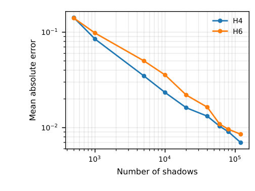
<figcaption class="paper-figure-caption"><b>Fig 1.</b> FIG. 1. Mean absolute overlap error from orbital-rotation shadows for hydrogen chains with 4 and 6 atoms at a spacing of 1Å. The trial state is the UpCCD state with MP2 parame- ters. The overlaps are computed with respect to 100 randomly sampled Slater determinants.</figcaption>
</figure>
<figure class="paper-figure-card">
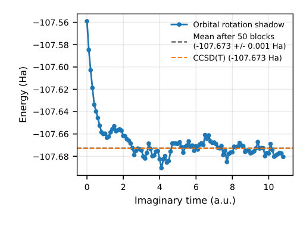
<figcaption class="paper-figure-caption"><b>Fig 2.</b> FIG. 2. QC-AFQMC energy trajectory for N2 using orbital- rotation shadows with an UpCCD trial state initialized from MP2 parameters. The dashed horizontal line indicates the reference CCSD(T) energy.</figcaption>
</figure>
<figure class="paper-figure-card">
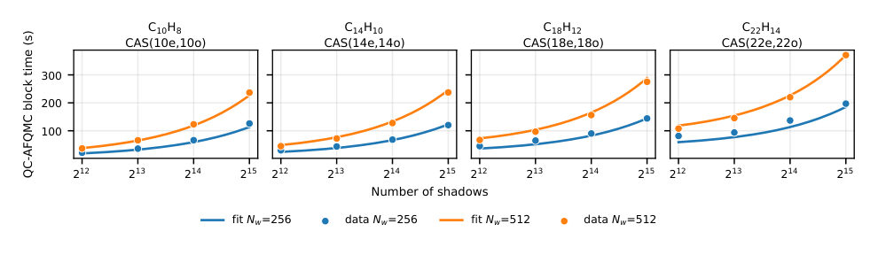
<figcaption class="paper-figure-caption"><b>Fig 3.</b> FIG. 3. Measured and fitted QC-AFQMC times for 1 block with 10 steps for orbital-rotation shadows across the π-conjugated benchmark series. Points show measured timings and solid lines show the fitted physical scaling model as a function of the number of shadows for different walker counts.</figcaption>
</figure>
<figure class="paper-figure-card">
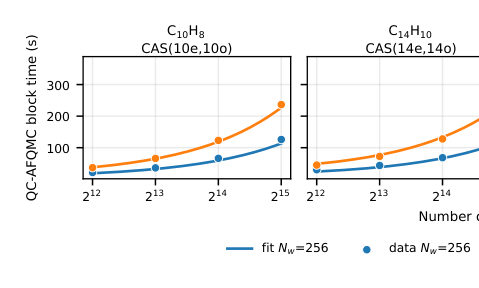
<figcaption class="paper-figure-caption"><b>Fig 4.</b> Figure 3 shows the measured timings and fitted curves used to calibrate the performance model and Table II shows the corresponding predicted QC-AFQMC run- times for the four larger π-conjugated systems using 65,536 orbital-rotation shadows, 1024 walkers and 150 blocks with 10 steps per block. We assume perfect strong scaling with the number of GPUs and that an NVIDIA H200 is 1.4× faster than an NVIDIA A100. Under these assumptions, pentacene with a (22e, 22o) active space is predicted to require slightly more than two days on 8 NVIDIA A100 GPUs and less than an hour on 320 NVIDIA H200 GPUs. To illustrate the significance of performance improve- ments, we turn to a comparison of runtime...</figcaption>
</figure>
</div>
<p><strong>Summary.</strong> This paper introduces orbital-rotation shadows to drastically reduce the classical computational cost associated with Quantum-Classical Auxiliary-Field Quantum Monte Carlo (QC-AFQMC). By developing efficient estimators for key observables like overlaps, the authors make the simulation of strongly correlated electronic structure problems, such as those in $\pi$-conjugated molecules, significantly more feasible on classical hardware coupled with quantum measurements.</p>
<p><strong>Why it may be interesting.</strong> This work provides a concrete, scalable computational pathway to simulate complex quantum many-body systems that are otherwise intractable due to classical overhead, directly impacting the feasibility of quantum simulation in chemistry and materials science.</p>
<details>
<summary>Detailed structure</summary>
<p><strong>Main problem.</strong> The paper addresses the classical post-processing bottleneck in Quantum-Classical Auxiliary-Field Quantum Monte Carlo (QC-AFQMC) simulations for strongly correlated electronic structure problems.</p>
<p><strong>Main result.</strong> They demonstrate that using orbital-rotation shadows significantly reduces the computational cost of calculating necessary overlaps and energy estimators, achieving polynomial scaling ($O(N^3)$ to $O(N^4)$) compared to previous exponential costs.</p>
<p><strong>Method.</strong> The core method involves deriving efficient estimators for quantum overlaps and local energies by implementing particle-number-preserving fermionic shadows (orbital-rotation shadows) and combining them with advanced trace evaluation techniques.</p>
<p><strong>Model / system.</strong> The work applies to strongly correlated electronic structure problems in molecules and materials, specifically using the framework of QC-AFQMC to evaluate properties of the quantum trial state $|\Psi_T
angle$ relative to a target determinant $|\phi
angle$.</p>
<p><strong>Key observables.</strong> Overlaps ($\langle\Psi_T|\phi
angle$), force biases, and local energies, which are crucial for the AFQMC propagation.</p>
<p><strong>Important parameters / regimes.</strong> The scaling analysis depends on system size ($N$), the number of ancillary modes ($\eta$), and the desired error tolerance ($\epsilon$).</p>
<p><strong>Assumptions / limitations.</strong> The analysis relies on the properties of fermionic shadows, the ability to efficiently evaluate traces using Grassmann integration, and the assumption that the orbital-rotation shadow technique correctly captures the necessary quantum information.</p>
<p><strong>Figures summary.</strong> Not specified in the notes, but the analysis involves deriving complex mathematical expressions for expectation values and variances related to Gaussian random matrices.</p>
<p><strong>Paper structure.</strong> The paper builds from identifying the QC-AFQMC bottleneck, introducing orbital-rotation shadows as a solution, deriving specific unbiased estimators for overlaps and derivatives, and finally demonstrating the feasibility and performance projections for large molecules.</p>
</details>
<details>
<summary>Abstract</summary>
<p>Quantum-classical auxiliary-field quantum Monte Carlo (QC-AFQMC) is a promising route to using quantum computers for strongly correlated electronic structure problems, but its scalability is limited by a classical post-processing bottleneck: the measured quantum trial state must be used to evaluate overlaps, force biases, and local energies for many walkers throughout the AFQMC propagation. Existing matchgate-shadow approaches avoid the exponential cost of generic classical shadows, but their post-processing remains expensive for large systems. In this work, we show that particle-number-preserving fermionic shadows, implemented as orbital-rotation shadows, are able to drastically reduce QC-AFQMC post-processing costs. We derive efficient estimators for overlaps and their derivatives, giving $O(N^3)$ scaling for overlaps and force biases and $O(N^4)$ scaling for local energies per shadow and walker and with $O(N)$ Cholesky vector. For fixed normalized target determinants, we also prove that the overlap estimator is unbiased with variance upper bounded by $O(η)$, where $η$ is the particle number, yielding a sufficient budget of $O(η/ε^2)$ ideal independent measurements for additive overlap error $ε$. We combine these estimators with a novel virtual-correlation-energy treatment and a GPU implementation and demonstrate QC-AFQMC using orbital-rotation shadows. Performance projections for $π$-conjugated molecules up to pentacene with a (22e, 22o) active space and 356 total orbitals show that the full classical post-processing workflow can be completed in slightly more than two days on 8$\times$A100 graphics processing units (GPUs). These results significantly reduce classical post-processing costs for QC-AFQMC and motivate further improvements in preparation and measurement of the trial state on quantum hardware.</p>
</details>
<p><sub><a href="#top">↑ back to top</a></sub></p>

<p><a id="paper-2610.03433"></a></p>
<h3 id="parity-time-symmetry-of-plasma-waves"><a href="http://arxiv.org/abs/2610.03433v1">Parity-Time Symmetry of Plasma Waves</a></h3>
<p><strong>Authors:</strong> Hong Qin<br>
<strong>Type:</strong> theory · <strong>Category:</strong> other · <strong>PDF:</strong> <a href="https://arxiv.org/pdf/2610.03433v1">https://arxiv.org/pdf/2610.03433v1</a><br>
<strong>Analysis basis:</strong> full PDF text, analyzed in chunks</p>
<div class="figure-strip-hint">↔ Scroll figures horizontally</div>
<div class="paper-figures-scroll">
<figure class="paper-figure-card">
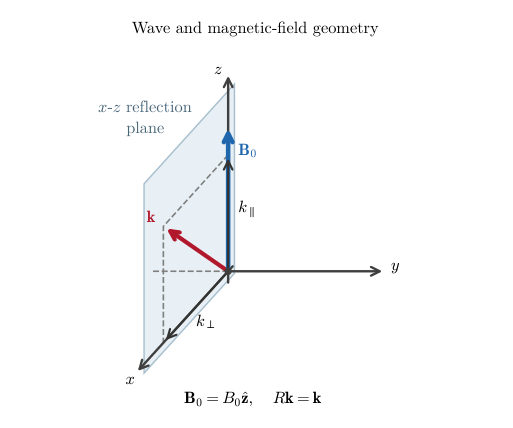
<figcaption class="paper-figure-caption"><b>Fig 1.</b> FIG. 1. Geometry of electromagnetic waves in a magnetized plasma and the reflection R = diag(1, −1, 1). The equilibrium magnetic field lies along z, and k = k⊥ˆx + k∥ˆz lies in the shaded x–z reflection plane. R reverses the y component while preserving the x and z components.</figcaption>
</figure>
<figure class="paper-figure-card">
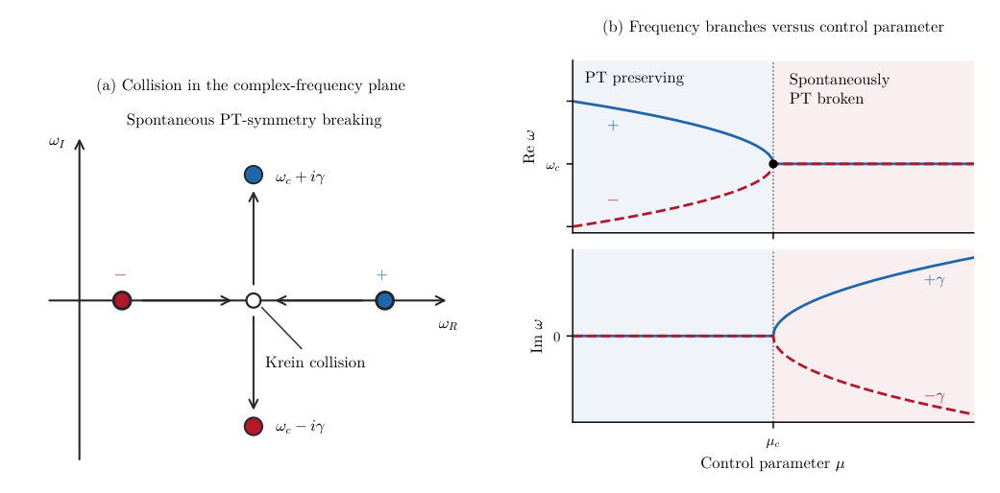
<figcaption class="paper-figure-caption"><b>Fig 2.</b> FIG. 2. Schematic Krein collision and spontaneous PT-symmetry breaking. (a) Trajectories in the complex-frequency plane. Real modes with opposite action signatures, indicated by + and −, approach the collision at ωc and emerge as a growing and decaying conjugate pair. Arrows indicate the direction of increasing control parameter, and the open circle marks the collision. (b) The corresponding frequency branches versus µ. Two real branches meet at µc; beyond the collision their real parts coincide and their imaginary parts are +γ and −γ. The curves illustrate the local square-root form in Eq. (85); all axes have arbitrary scales.</figcaption>
</figure>
<figure class="paper-figure-card">
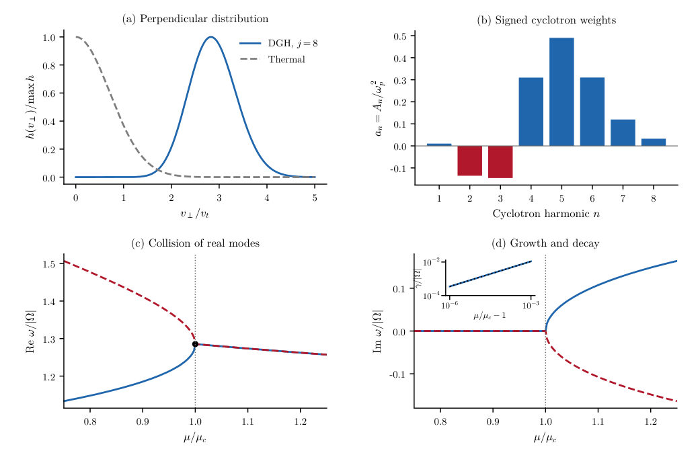
<figcaption class="paper-figure-caption"><b>Fig 3.</b> FIG. 3. Spontaneous PT breaking for the smooth DGH equilibrium in Eq. (88), with j = 8, k⊥vt/|Ω| = 4.5/ √</figcaption>
</figure>
<figure class="paper-figure-card">
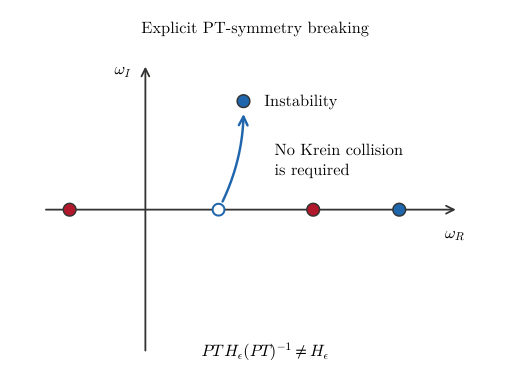
<figcaption class="paper-figure-caption"><b>Fig 4.</b> FIG. 4. Schematic destabilization by explicit PT-symmetry breaking, following the concept illustrated in Refs. 16 and 17. The open circle marks the initial real eigenfrequency of the mode that becomes unstable. The arrow shows its motion into the upper half-plane as an explicit PT symmetry break- ing perturbation of strength ϵ increases. Filled circles mark the frequencies of the perturbed operator Hϵ; the other three modes remain on the real axis. No Krein collision is required, and the frequencies need not form complex-conjugate pairs. Colors identify branches, and the axes have arbitrary scales.</figcaption>
</figure>
</div>
<p><strong>Summary.</strong> This work establishes PT symmetry as a fundamental structural principle governing plasma waves in magnetized, collisionless plasmas. By proving that the underlying kinetic Hamiltonian is PT-symmetric, the authors link spontaneous symmetry breaking to the onset of kinetic instabilities. This framework offers new tools for predicting plasma instabilities and understanding spectral topology.</p>
<p><strong>Why it may be interesting.</strong> The application of PT-symmetry concepts, typically from quantum mechanics, to classical plasma wave dynamics provides a powerful structural principle for understanding stability and spectral topology in complex, non-Hermitian physical systems.</p>
<details>
<summary>Detailed structure</summary>
<p><strong>Main problem.</strong> The paper investigates the parity-time (PT) symmetry of the susceptibility tensor and the underlying kinetic system in a homogeneous, collisionless, magnetized plasma.</p>
<p><strong>Main result.</strong> The susceptibility exhibits PT symmetry, which is shown to be a reduced-response-space manifestation of the full Vlasov–Maxwell Hamiltonian being PT-symmetric. Spontaneous PT-symmetry breaking is fundamentally linked to kinetic instabilities occurring via Krein collisions.</p>
<p><strong>Method.</strong> The analysis involves identifying parity (P) and time reversal (T) operators on the electromagnetic kinetic eigenmode space and applying the framework of PT-symmetric quantum mechanics to plasma response functions.</p>
<p><strong>Model / system.</strong> The system is a homogeneous collisionless magnetized plasma with a stationary gyrotropic equilibrium. The theory is built upon the linearized Vlasov–Maxwell and Vlasov–Poisson systems.</p>
<p><strong>Key observables.</strong> Susceptibility tensor $\chi(\omega, \mathbf{k})$, eigenfrequencies ($\omega$), and the Hamiltonian operator $\mathcal{H}_{\mathrm{VM}}$.</p>
<p><strong>Important parameters / regimes.</strong> Plasma frequency ($\omega_{ps}$), cyclotron frequency ($\Omega_s$), and the wave vector $\mathbf{k}$.</p>
<p><strong>Assumptions / limitations.</strong> The plasma is assumed to be collisionless, and the equilibrium is stationary and gyrotropic.</p>
<p><strong>Figures summary.</strong> Figure 1 illustrates the geometry of the wave vector and the reflection operator $R$. Other figures schematically show the movement of eigenfrequencies across the real axis during explicit PT-symmetry breaking.</p>
<p><strong>Paper structure.</strong> The paper first establishes the PT symmetry of the susceptibility tensor $\chi$ (Section III), and then extends this analysis to prove the PT symmetry of the full Hamiltonian operator $\mathcal{H}_{\mathrm{VM}}$ of the Vlasov–Maxwell system (Section IV).</p>
</details>
<details>
<summary>Abstract</summary>
<p>The susceptibility tensor of a homogeneous collisionless magnetized plasma possesses parity-time (PT) symmetry. For a stationary gyrotropic equilibrium, with the wave vector $\mathbf{k}$ and the equilibrium magnetic field $\mathbf{B}_0$ in the $x$--$z$ plane, the kinetic response satisfies $χ(ω^*,\mathbf{k})=Rχ(ω,\mathbf{k})^*R$, where $R=\operatorname{diag}(1,-1,1)$. We show that the susceptibility PT-symmetry is a reduced-response-space manifestation of PT symmetry of the underpinning kinetic system. We identify parity $P$ and time reversal $T$ on the electromagnetic kinetic eigenmode space and show that the Hamiltonian operator $\mathcal{H}_{\mathrm{VM}}$ of the linearized Vlasov--Maxwell system is PT-symmetric, satisfying $PT\mathcal{H}_{\mathrm{VM}}(PT)^{-1}=\mathcal{H}_{\mathrm{VM}}$. The PT symmetry of the homogeneous magnetized Vlasov--Poisson eigenproblem is also established. Many kinetic instabilities associated with nonmonotonic distributions, rings, loss cones, and resonant energetic-particle populations are fundamentally spontaneous PT-symmetry breaking, which is achieved through and only through Krein collisions. Three examples demonstrate distinct utilities of this analysis. Definite-sign cyclotron residues protect thermal Bernstein modes from spontaneous PT-symmetry breaking. The nonmonotonic Dory--Guest--Harris distribution permits sign-indefinite residues and Krein collisions, for which we derive an analytical instability threshold and growth rate. The recently discovered mode-pole resonance instability provides a distinct realization of spontaneous PT-symmetry breaking and illustrates how PT symmetry can guide the discovery of kinetic instabilities with applications to fusion energy. These results establish PT symmetry as a structural principle of plasma waves and instabilities and open new directions for studying spectral topology in kinetic plasmas.</p>
</details>
<p><sub><a href="#top">↑ back to top</a></sub></p>

<p><a id="paper-2610.03637"></a></p>
<h3 id="polynomial-time-algorithms-for-nuclear-tensor-norms-and-multipartite-separability"><a href="http://arxiv.org/abs/2610.03637v1">Polynomial-Time Algorithms for Nuclear Tensor Norms and Multipartite Separability</a></h3>
<p><strong>Authors:</strong> Martino Bernasconi, Giulio Malavolta<br>
<strong>Type:</strong> theory · <strong>Category:</strong> quantum information and computing · <strong>PDF:</strong> <a href="https://arxiv.org/pdf/2610.03637v1">https://arxiv.org/pdf/2610.03637v1</a><br>
<strong>Analysis basis:</strong> full PDF text, analyzed in chunks</p>
<div class="figure-strip-hint">↔ Scroll figures horizontally</div>
<div class="paper-figures-scroll">
<figure class="paper-figure-card">
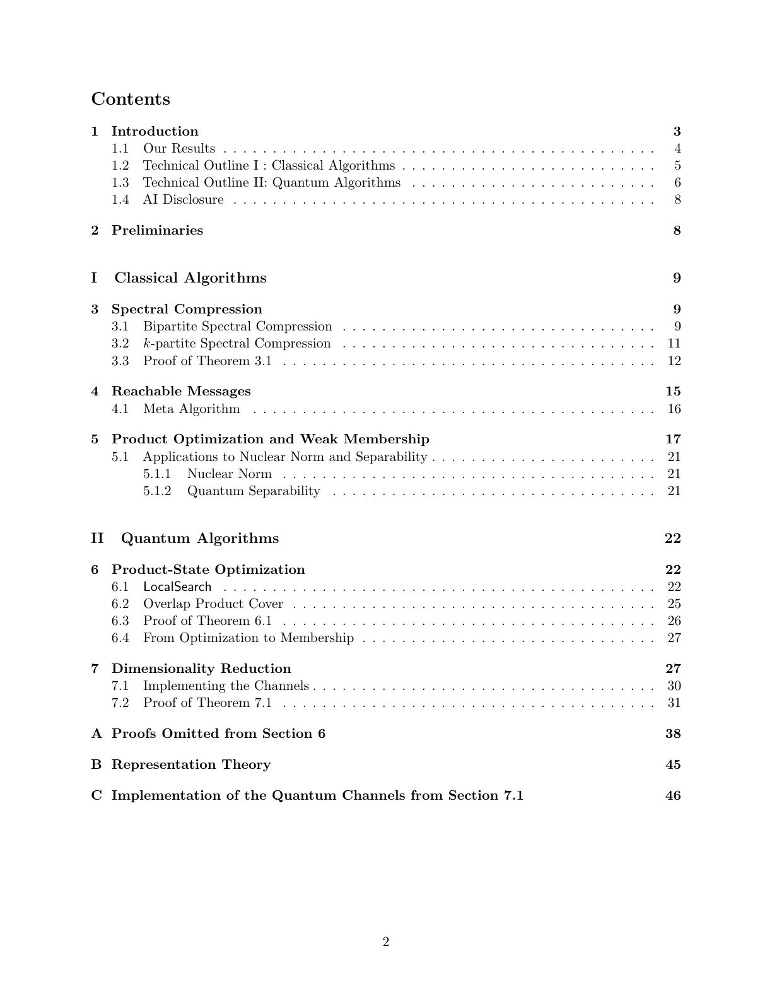
<figcaption class="paper-figure-caption"><b>Fig 1.</b> Low-resolution page preview, page 2</figcaption>
</figure>
<figure class="paper-figure-card">
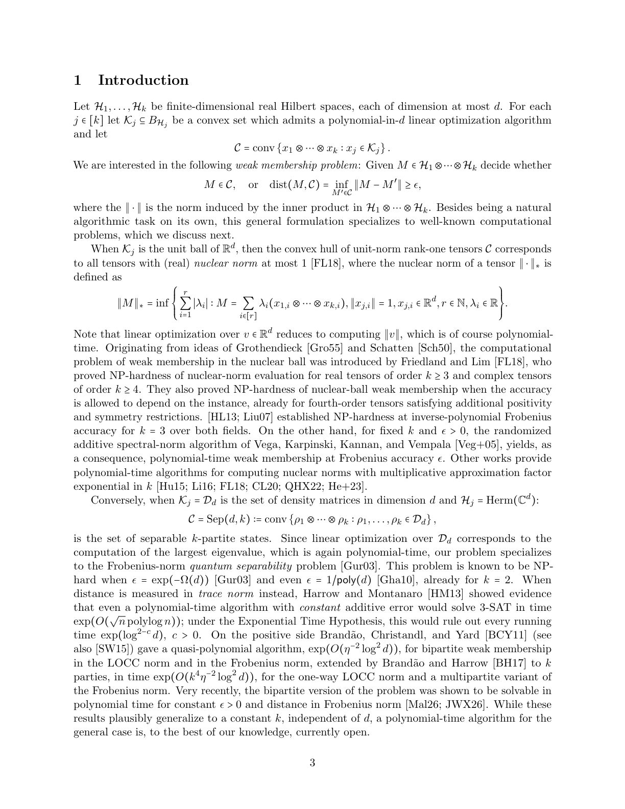
<figcaption class="paper-figure-caption"><b>Fig 2.</b> Low-resolution page preview, page 3</figcaption>
</figure>
<figure class="paper-figure-card">
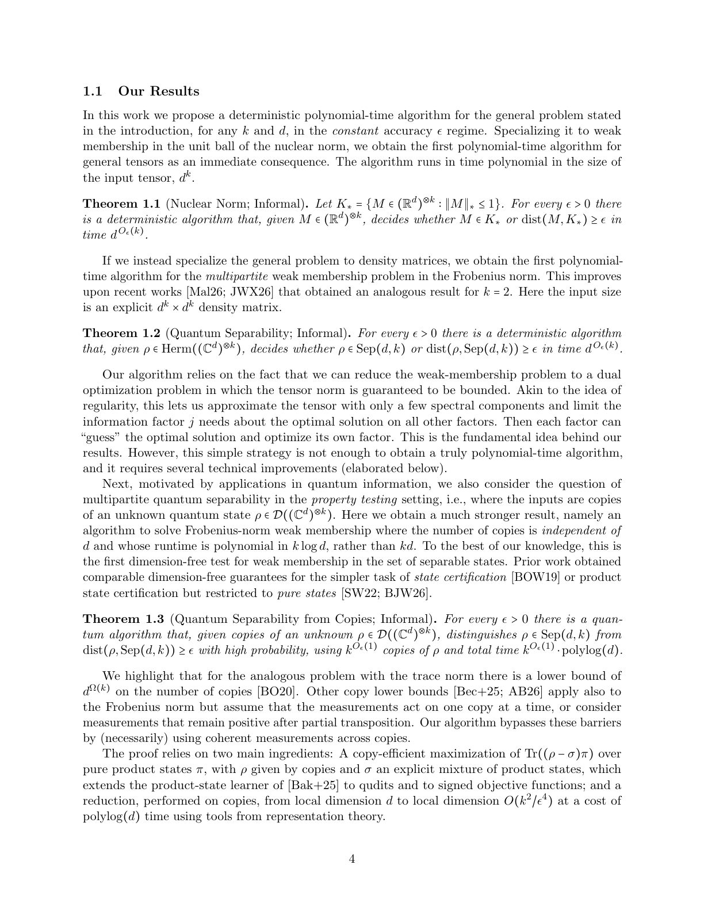
<figcaption class="paper-figure-caption"><b>Fig 3.</b> Low-resolution page preview, page 4</figcaption>
</figure>
<figure class="paper-figure-card">
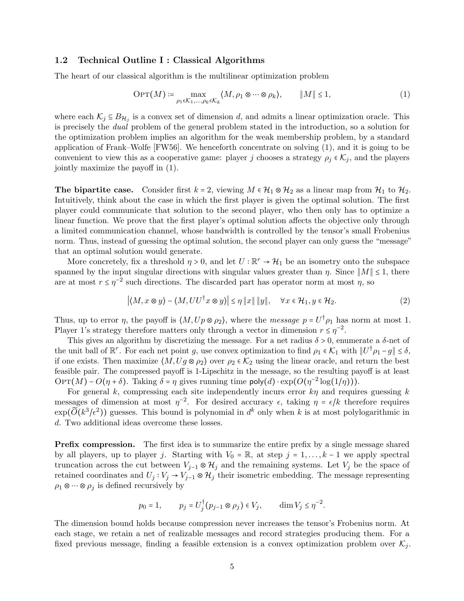
<figcaption class="paper-figure-caption"><b>Fig 4.</b> Low-resolution page preview, page 5</figcaption>
</figure>
<figure class="paper-figure-card">
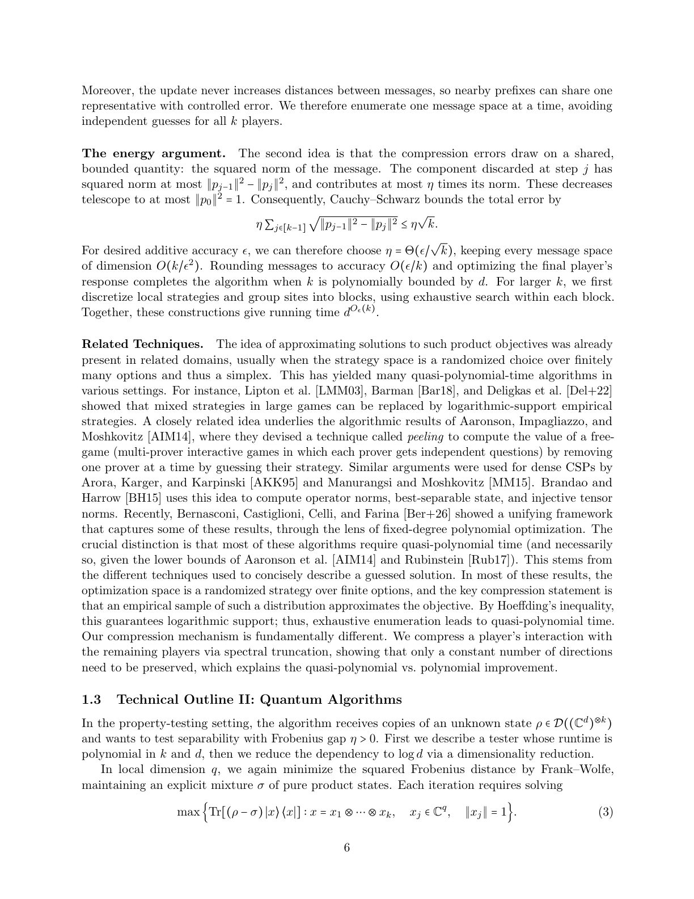
<figcaption class="paper-figure-caption"><b>Fig 5.</b> Low-resolution page preview, page 6</figcaption>
</figure>
</div>
<p><strong>Summary.</strong> This paper presents polynomial-time algorithms for determining if a high-order tensor belongs to the convex set defining quantum separability or the nuclear norm ball. It achieves this by framing the problem as a multiprover game and developing sophisticated classical and quantum techniques involving spectral compression. The results provide significant algorithmic advances for quantum information theory.</p>
<p><strong>Why it may be interesting.</strong> The development of polynomial-time quantum algorithms for fundamental tasks like separability testing is crucial for advancing quantum characterization and resource theories in quantum information.</p>
<details>
<summary>Detailed structure</summary>
<p><strong>Main problem.</strong> The paper develops efficient algorithms to solve multilinear optimization problems related to weak membership in the nuclear norm unit ball and multipartite quantum separability.</p>
<p><strong>Main result.</strong> It achieves polynomial-time classical algorithms and a quantum algorithm requiring only polylogarithmic copies to test quantum separability in the Frobenius norm.</p>
<p><strong>Method.</strong> The approach combines viewing tensor optimization as a cooperative multiprover game with recursive spectral compression techniques, leading to both classical and quantum algorithmic implementations.</p>
<p><strong>Model / system.</strong> The focus is on high-order tensors $M$ whose factors are constrained by convex sets $K_j$, specifically relating to quantum states $
ho$ in the context of multipartite quantum separability.</p>
<p><strong>Key observables.</strong> The primary observables are the distance to the separable set, $   ext{dist}(M, C)$, and the maximum value of the multilinear expectation $    ext{Opt}(M)$.</p>
<p><strong>Important parameters / regimes.</strong> Key parameters include the number of subsystems $k$, the local dimension $d$, the approximation accuracy $\epsilon$, and the number of copies used in the quantum protocol.</p>
<p><strong>Assumptions / limitations.</strong> The quantum algorithm relies on the ability to implement specific filtering channels and utilizes the concept of coherent measurements across multiple copies of the state.</p>
<p><strong>Figures summary.</strong> Not specified in the provided notes.</p>
<p><strong>Paper structure.</strong> The paper is structured by first outlining the general multilinear optimization problem, then detailing the classical algorithm using spectral compression, and finally presenting the quantum algorithm leveraging copies and dimensionality reduction techniques.</p>
</details>
<details>
<summary>Abstract</summary>
<p>We study a multilinear optimization problem for tensors with bounded Frobenius norm, where each of the $k$ local factors of dimension $d$ is chosen from a convex set. We give a deterministic algorithm running in time $d^{O(k)}$ for constant additive approximations. As applications, we obtain the first polynomial-time algorithms at constant accuracy for weak membership in the nuclear-norm unit ball of high-order tensors and for multipartite quantum separability in Frobenius norm. Our approach views tensor optimization as a cooperative multiprover game and combines this perspective with a recursive spectral compression procedure. We then show that related ideas admit a quantum implementation when the input state is given through copies, rather than an explicit classical description. In these settings we obtain an algorithm to solve Frobenius-norm separability testing using $\text{poly}(k)$ copies and $\text{poly}(k\log d)$ time.</p>
</details>
<p><sub><a href="#top">↑ back to top</a></sub></p>

<p><a id="paper-2610.03581"></a></p>
<h3 id="quantum-algorithms-for-orthogonal-polynomial-transforms"><a href="http://arxiv.org/abs/2610.03581v1">Quantum algorithms for orthogonal polynomial transforms</a></h3>
<p><strong>Authors:</strong> Anupam Prakash, Shree Hari Sureshbabu, Dylan Herman, Shouvanik Chakrabarti<br>
<strong>Type:</strong> theory · <strong>Category:</strong> quantum information and computing · <strong>PDF:</strong> <a href="https://arxiv.org/pdf/2610.03581v1">https://arxiv.org/pdf/2610.03581v1</a><br>
<strong>Analysis basis:</strong> full PDF text, analyzed in chunks</p>
<div class="figure-strip-hint">↔ Scroll figures horizontally</div>
<div class="paper-figures-scroll">
<figure class="paper-figure-card">
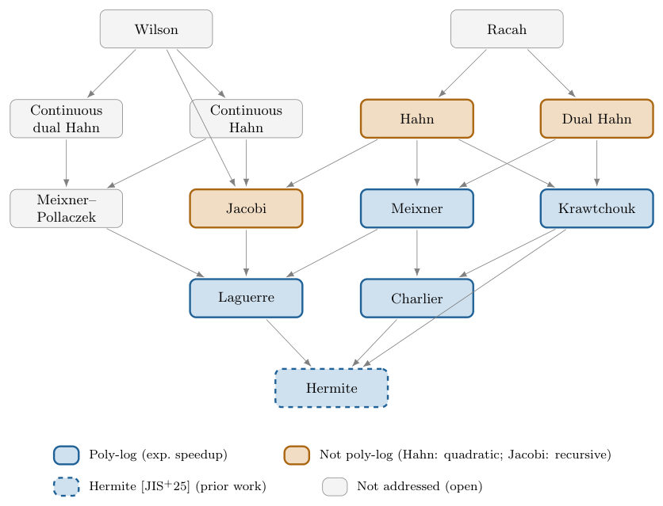
<figcaption class="paper-figure-caption"><b>Fig 1.</b> Figure 1: The Askey scheme of hypergeometric orthogonal polynomials, organized top-to-bottom by decreasing level; arrows denote limit transitions between families. Blue families admit poly- logarithmic QOPTs with exponential speedups (Charlier, Krawtchouk, Meixner, Laguerre). Orange families are realized here but are not poly-logarithmic: the Hahn transform attains a quadratic speedup over the naive O(N2) implementation, and the Jacobi transform can be implemented using the Hahn in a restricted setting. The Hermite transform at the base is the foundational QOPT of [JIS+25] on which the digital implementations are built.</figcaption>
</figure>
</div>
<p><strong>Summary.</strong> This paper develops quantum algorithms for orthogonal polynomial transforms (QOPTs) by exploiting deep connections between these transforms and the structure of Gaussian quantum optical gates. It achieves polylogarithmic time complexity for several key polynomial families, offering significant computational speedups over classical or naive quantum implementations.</p>
<p><strong>Why it may be interesting.</strong> This work directly addresses the computational complexity of fundamental mathematical transforms, providing quantum circuit blueprints that could accelerate quantum simulations or quantum signal processing tasks.</p>
<details>
<summary>Detailed structure</summary>
<p><strong>Main problem.</strong> The paper focuses on developing highly efficient quantum algorithms for performing orthogonal polynomial transforms (QOPTs). These transforms are fundamental mathematical tools in quantum signal processing and quantum information theory.</p>
<p><strong>Main result.</strong> The authors provide new QOPTs for several families in the Askey scheme, achieving time complexities that are polylogarithmic in the system size, representing significant speedups over naive implementations.</p>
<p><strong>Method.</strong> The efficiency is achieved by mapping the polynomial transforms to the action of Gaussian quantum optical gates (like those generated by $SU(2)$ and $SU(1,1)$ groups) and utilizing advanced quantum circuit compilation techniques.</p>
<p><strong>Model / system.</strong> The underlying model involves mapping a superposition of basis states to a superposition of orthonormal polynomial states. The analysis connects these transforms to the structure of the Askey scheme, which organizes various orthogonal polynomial families.</p>
<p><strong>Key observables.</strong> The primary observables are the transformation coefficients and the time complexity of the quantum circuit required to execute the transform.</p>
<p><strong>Important parameters / regimes.</strong> The key parameters include the grid size $N$, the error tolerance $\epsilon$, and the specific parameters ($\alpha, eta, 
u$) defining the polynomial family (e.g., Charlier, Laguerre).</p>
<p><strong>Assumptions / limitations.</strong> The efficiency relies on the existence of a second-order differential or difference operator governing the polynomials and the ability to decompose the required evolution into a product of elementary Gaussian gates.</p>
<p><strong>Figures summary.</strong> Figure 1 illustrates the Askey scheme, showing that polynomial families admitting poly-logarithmic QOPTs are those associated with certain group structures.</p>
<p><strong>Paper structure.</strong> The paper progresses by defining the QOPT, establishing the connection to Gaussian quantum optics via the Askey scheme, deriving specific fast algorithms for several families (Charlier, Meixner, Krawtchouk, Laguerre), and finally providing detailed mathematical derivations confirming the speedups.</p>
</details>
<details>
<summary>Abstract</summary>
<p>A quantum orthogonal polynomial transform (QOPT) is an algorithmic primitive that maps a superposition of standard basis states $\sum_k α_{k} \ket{k}$ coherently to a basis of normalized univariate polynomials orthogonal with respect to a probability measure $μ(x)$. We provide new discrete and continuous QOPTs for polynomial families in the Askey scheme extending the results for the quantum Hermite transform (Jain et al., STOC'26). Our efficient QOPT algorithms require time $O(\text{polylog}(N, 1/ε))$, where $N$ is the grid size and $ε$ is the error, for the discrete Charlier, Meixner and Krawtchouk transforms and for the integer-order Laguerre transform in the continuous setting. The efficient QOPTs are obtained by uncovering the links between Askey scheme polynomials and Gaussian quantum optical gates and developing a compilation framework for $SU(2)$ and $SU(1,1)$ optical gates on Cartesian grids extending the framework developed by Iyer et al. (arXiv:2602.15180). Further, we reduce the continuous Jacobi transform to the discrete Hahn transform and provide an $O\!\left(N\operatorname{polylog}((N+α+β+1)/ε)\right)$-time Hahn transform, a quadratic speedup over the naive implementation. This is based on a more efficient compilation of the Clebsch--Gordan transform for coupling $\mathrm{SU}(2)$ representations with spins $(j_{1}, j_{2})$. Finally, we develop a new framework for Laguerre transforms for all orders $ν>0$ by fast-forwarding the corresponding radial oscillator using a 3-term chirp decomposition and an efficient algorithm for the Quantum Hankel Transform on a logarithmic grid.</p>
</details>
<p><sub><a href="#top">↑ back to top</a></sub></p>

<p><a id="paper-2610.03214"></a></p>
<h3 id="quantum-code-parameters-checkable-by-a-certificate-of-provable-size"><a href="http://arxiv.org/abs/2610.03214v1">Quantum code parameters, checkable by a certificate of provable size</a></h3>
<p><strong>Authors:</strong> Shuoming An, Fusheng Yang<br>
<strong>Type:</strong> theory · <strong>Category:</strong> quantum information and computing · <strong>PDF:</strong> <a href="https://arxiv.org/pdf/2610.03214v1">https://arxiv.org/pdf/2610.03214v1</a><br>
<strong>Analysis basis:</strong> full PDF text, analyzed in chunks</p>
<div class="figure-strip-hint">↔ Scroll figures horizontally</div>
<div class="paper-figures-scroll">
<figure class="paper-figure-card">
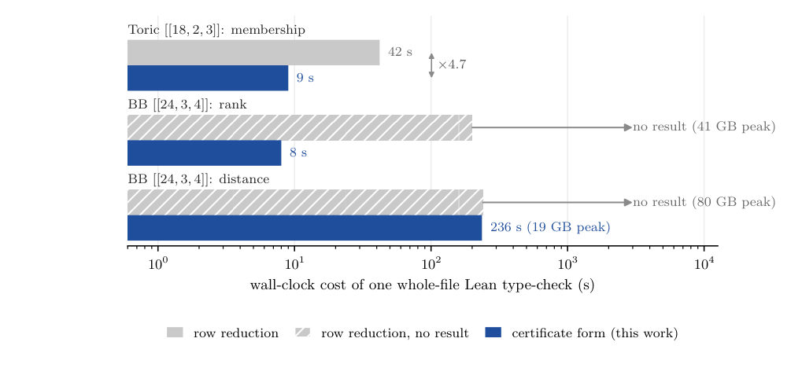
<figcaption class="paper-figure-caption"><b>Fig 1.</b> FIG. 1. The device decides the cost. Row 1 changes the certificate form; rows 2 and 3 hold it fixed and change the elimination that computes it. Each row is one whole-file Lean type-check of the module that carries the assertion, done two ways: the device tried first, and the device this work supplies. The horizontal axis is that time in seconds on a logarithmic scale, so bar length is not proportional to time. Row 1 decides whether a light logical operator in a toric code escapes its checks: by row reduction, or by a dual witness, a second vector that pairs to one with the candidate. Rows 2 and 3 read the rank and the distance lower bound of the gauged code [[24, 3, 4]], a bicycle code...</figcaption>
</figure>
<figure class="paper-figure-card">
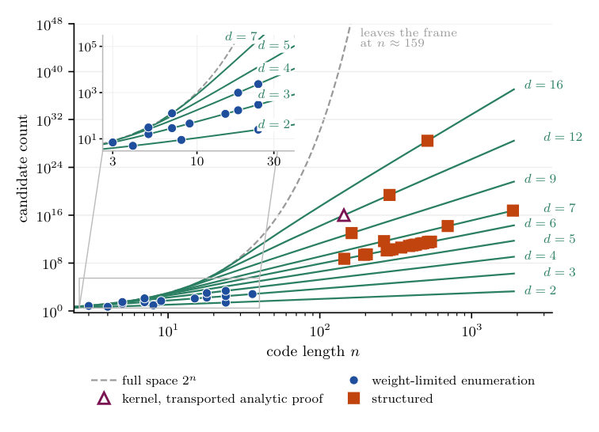
<figcaption class="paper-figure-caption"><b>Fig 2.</b> FIG. 2. The certificate stays polynomial while the space searched is exponential. Solid curves: the weight-limited certificate P</figcaption>
</figure>
</div>
<p><strong>Summary.</strong> This paper introduces a novel method to formally verify the parameters of quantum error-correcting codes by replacing computationally intractable checks with small, verifiable 'certificates'. By leveraging proof assistants, the authors show that the distance and other parameters can be proven correct with a certificate whose size is polynomial in the code length, making the concept of 'checkable' a reality rather than just a belief.</p>
<p><strong>Why it may be interesting.</strong> This work provides a powerful, formal mathematical tool for verifying fundamental parameters of quantum codes, which is crucial for building and analyzing fault-tolerant quantum computation architectures.</p>
<details>
<summary>Detailed structure</summary>
<p><strong>Main problem.</strong> The core problem is determining if the parameters of quantum error-correcting codes, $[[n, k, d]]$, can be checked uniformly across all codes using a certificate of provable, polynomial size.</p>
<p><strong>Main result.</strong> The authors demonstrate that checking code parameters can be made uniform by moving the computational burden from the code structure itself to a short, verifiable 'certificate' object.</p>
<p><strong>Method.</strong> They utilize formal proof assistants (Lean) to verify the correctness of these certificates, reducing complex checks (like membership in a row space) to simple, verifiable operations like matrix-vector products and inner products.</p>
<p><strong>Model / system.</strong> The work focuses on quantum error-correcting codes, defined by physical qubits ($n$), logical qubits ($k$), and distance ($d$). These codes are mathematically analyzed using parity-check matrices over GF(2).</p>
<p><strong>Key observables.</strong> Code parameters $[[n, k, d]]$, the distance $d$ (minimum weight of a logical operator), and the size of the required certificate.</p>
<p><strong>Important parameters / regimes.</strong> The certificate size is shown to be polynomial in $n$ for a fixed distance $d$. Specific examples include the 18-qubit toric code.</p>
<p><strong>Assumptions / limitations.</strong> The proof relies entirely on the foundational axioms of the Lean proof assistant, and the method is presented as a general principle applicable wherever a computation currently ends in an external solver.</p>
<p><strong>Figures summary.</strong> Figures compare the time cost of different checking methods (e.g., row reduction vs. certificate form) for code properties, and plots show the growth rate of the required certificate size.</p>
<p><strong>Paper structure.</strong> The paper establishes the open problem, proposes the certificate-based verification method, details the reduction of complex checks to simple algebraic operations, and provides concrete computational speedups and parameter sets as evidence.</p>
</details>
<details>
<summary>Abstract</summary>
<p>A code is described by three numbers: its physical qubits, its logical qubits, and the smallest error it cannot detect, counted in qubits. The first two are linear algebra. The third, the distance, is an optimum over an exponentially large set, read off a solver whose answer carries no certificate. Whether a code's parameters can be checked uniformly across codes, with a certificate of proved size, is open. Here we show that they can, by moving the unit of work from the code to a \emph{certificate}, a short object, either a list, a pairing or a symbolic instance, whose correctness the kernel of the \Lean\ proof assistant decides by computation. The kernel is the small core that checks each step. The certificate's size is itself a theorem: its enumeration form lists the vectors of weight below the distance $d$, $\sum_{j<d}\binom{n}{j}$ of them, a polynomial in the code's length $n$ at fixed distance $d$. No bound uniform over codes in both $n$ and $d$ is smaller. For product families the certificate is smaller still, the bound being proved once, symbolically. Deciding that a vector lies outside the row space of the check matrix, the set of sums of its rows, becomes one matrix-vector product and one inner product. On an eighteen-qubit toric code, a surface code closed into a torus, the whole-file check of that decision falls from 42\,s to 9\,s. Eleven code families and thirty-nine parameter sets follow, the widest at 1872 qubits. Nothing beyond the three standard axioms of \Lean's logic is trusted, though the generator that writes a code's checks stops at twenty qubits, and the lower bound for the 144-qubit code is imported rather than proved here. A distance becomes checkable rather than believed, and the same move applies wherever else a computation ends in a solver.</p>
</details>
<p><sub><a href="#top">↑ back to top</a></sub></p>

<p><a id="paper-2610.03673"></a></p>
<h3 id="quantum-simulation-on-riemannian-manifolds"><a href="http://arxiv.org/abs/2610.03673v1">Quantum Simulation on Riemannian Manifolds</a></h3>
<p><strong>Authors:</strong> Dylan Herman, Jacob Watkins, Guneykan Ozgul, Jiayu Shen, Brandon Augustino, Junhyung Lyle Kim, Shouvanik Chakrabarti<br>
<strong>Type:</strong> theory · <strong>Category:</strong> quantum information and computing · <strong>PDF:</strong> <a href="https://arxiv.org/pdf/2610.03673v1">https://arxiv.org/pdf/2610.03673v1</a><br>
<strong>Analysis basis:</strong> full PDF text, analyzed in chunks</p>
<div class="figure-strip-hint">↔ Scroll figures horizontally</div>
<div class="paper-figures-scroll">
<figure class="paper-figure-card">
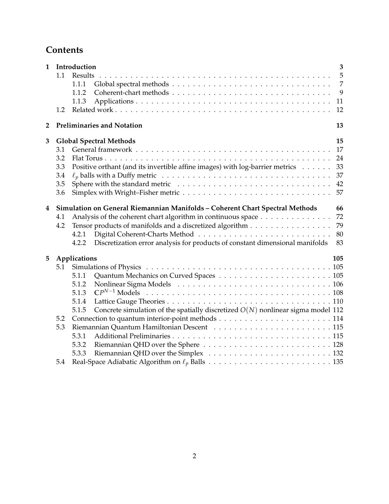
<figcaption class="paper-figure-caption"><b>Fig 1.</b> Low-resolution page preview, page 2</figcaption>
</figure>
<figure class="paper-figure-card">
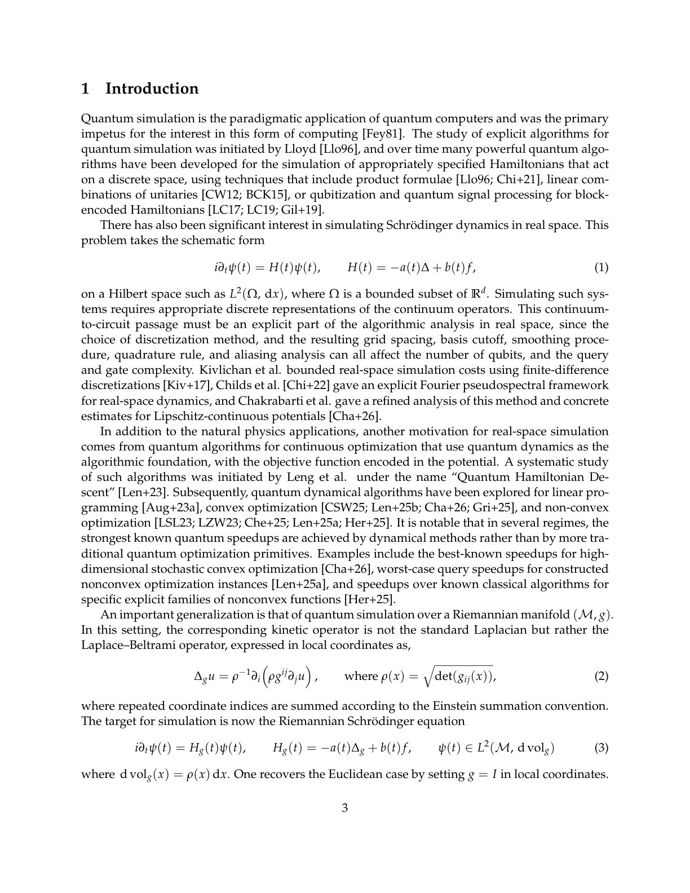
<figcaption class="paper-figure-caption"><b>Fig 2.</b> Low-resolution page preview, page 3</figcaption>
</figure>
<figure class="paper-figure-card">
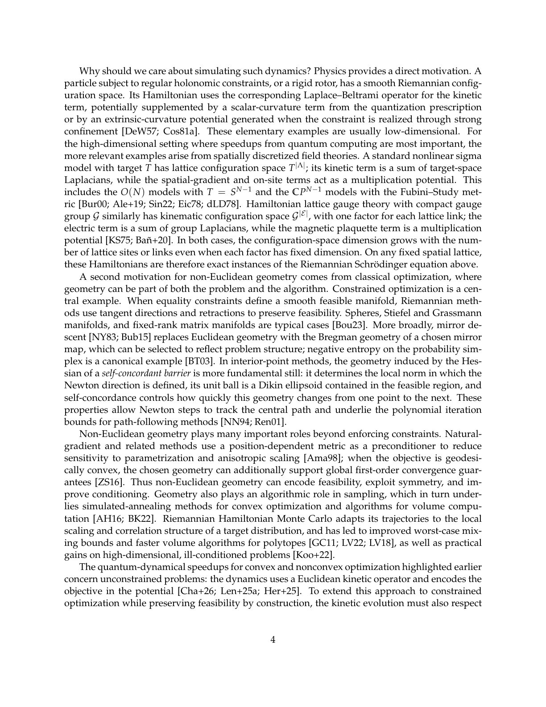
<figcaption class="paper-figure-caption"><b>Fig 3.</b> Low-resolution page preview, page 4</figcaption>
</figure>
<figure class="paper-figure-card">
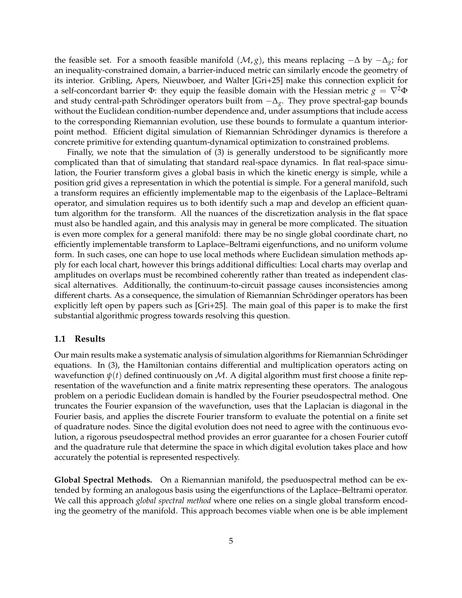
<figcaption class="paper-figure-caption"><b>Fig 4.</b> Low-resolution page preview, page 5</figcaption>
</figure>
<figure class="paper-figure-card">
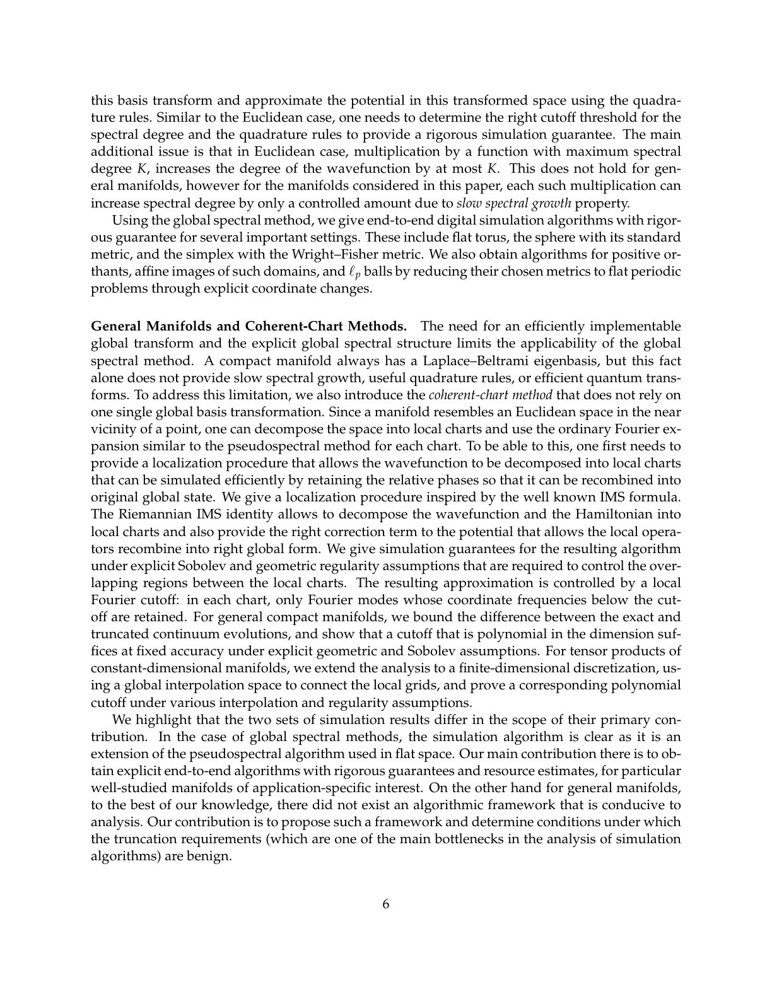
<figcaption class="paper-figure-caption"><b>Fig 5.</b> Low-resolution page preview, page 6</figcaption>
</figure>
</div>
<p><strong>Summary.</strong> This paper develops quantum algorithms to simulate quantum dynamics governed by the Schrödinger equation on Riemannian manifolds. It introduces two primary techniques—a global spectral method and a local, chart-based coherent simulation—to handle the complex geometry. The work demonstrates the feasibility of these methods for simulating physical models ranging from constrained optimization problems to nonlinear field theories.</p>
<p><strong>Why it may be interesting.</strong> This work directly addresses the computational challenge of simulating quantum dynamics on curved spaces, which is crucial for modeling physical systems whose configuration space is inherently Riemannian (e.g., particle motion on curved surfaces or field theories on curved backgrounds).</p>
<details>
<summary>Detailed structure</summary>
<p><strong>Main problem.</strong> Developing efficient quantum algorithms to simulate the time evolution governed by the Schrödinger equation on a Riemannian manifold.</p>
<p><strong>Main result.</strong> The authors present two main algorithmic approaches: a global spectral method for specific manifolds and a coherent simulation of local spectral methods applicable to any compact manifold.</p>
<p><strong>Method.</strong> The methods involve spectral decomposition using the Laplace-Beltrami operator's eigenbasis (global method) or decomposing the manifold into overlapping local charts and coherently recombining local simulations (coherent-chart method).</p>
<p><strong>Model / system.</strong> The system is described by the Riemannian Schrödinger equation, $i\partial_t\psi = H_g\psi$, where the Hamiltonian includes the Laplace-Beltrami operator ($\Delta_g$) derived from the manifold metric $g$. Applications include optimization on curved spaces and simulating field theories like the nonlinear sigma model.</p>
<p><strong>Key observables.</strong> The time evolution of the quantum state $\psi(t)$, and convergence/error guarantees related to the spectral cutoff used in the simulation.</p>
<p><strong>Important parameters / regimes.</strong> The choice of manifold (e.g., sphere, torus, simplex), the metric tensor $g$, and the spectral cutoff parameter.</p>
<p><strong>Assumptions / limitations.</strong> The global method requires an efficient transform to the eigenbasis, while the coherent-chart method relies on deriving conditions for polynomial spectral cutoffs in the continuum limit.</p>
<p><strong>Paper structure.</strong> The paper is structured around presenting and analyzing two distinct quantum simulation algorithms: the global spectral method and the coherent-chart method. It then applies these methods to specific physical problems, namely quantum optimization (e.g., Quantum Hamiltonian Descent) and physical field theory simulations.</p>
</details>
<details>
<summary>Abstract</summary>
<p>We investigate algorithms for the quantum simulation of the Schrödinger equation on a Riemannian manifold, where the kinetic operator is defined by the Laplace--Beltrami operator corresponding to the metric. Our first algorithms are based on a global spectral method based on the identification of an efficient transform to the eigenbasis of the Laplace--Beltrami operator. We use this method to provide explicit, efficient, quantum simulation algorithms for the Riemannian Schrödinger equation on tori and spheres with their standard metrics, simplices with the Wright--Fisher metric, truncated positive orthants and their invertible affine images with the log-barrier Hessian metric, and $\ell_p$ balls with a metric induced by the Duffy map. Our second algorithm is based on a coherent simulation of local spectral methods on multiple charts, and is in principle applicable to any compact manifold. We first analyze this algorithm in the continuum and derive conditions under which a polynomial spectral cutoff suffices. We also provide a discretization analysis of a polynomial spectral cutoff for tensor-products of constant-dimensional manifolds. Finally, we consider applications of these methods to optimization and physical simulation. For optimization, we provide results including a generalization and convergence analysis of Quantum Hamiltonian Descent for geodesically convex functions that leads to explicit algorithms on the sphere and simplex, and a Riemannian generalization of the Real-Space Adiabatic Algorithm. For physical simulation, we show that our algorithms can simulate certain spatially discretized field theories, including a variant of the nonlinear sigma model.</p>
</details>
<p><sub><a href="#top">↑ back to top</a></sub></p>

<p><a id="paper-2610.03382"></a></p>
<h3 id="quantum-utility-routing-in-continuous-variable-qkd-networks-with-trusted-and-untrusted-relays"><a href="http://arxiv.org/abs/2610.03382v1">Quantum utility routing in continuous-variable QKD networks with trusted and untrusted relays</a></h3>
<p><strong>Authors:</strong> Farsad Ahmad, Aeysha Khalique<br>
<strong>Type:</strong> theory · <strong>Category:</strong> quantum information and computing · <strong>PDF:</strong> <a href="https://arxiv.org/pdf/2610.03382v1">https://arxiv.org/pdf/2610.03382v1</a><br>
<strong>Analysis basis:</strong> full PDF text, analyzed in chunks</p>
<div class="figure-strip-hint">↔ Scroll figures horizontally</div>
<div class="paper-figures-scroll">
<figure class="paper-figure-card">
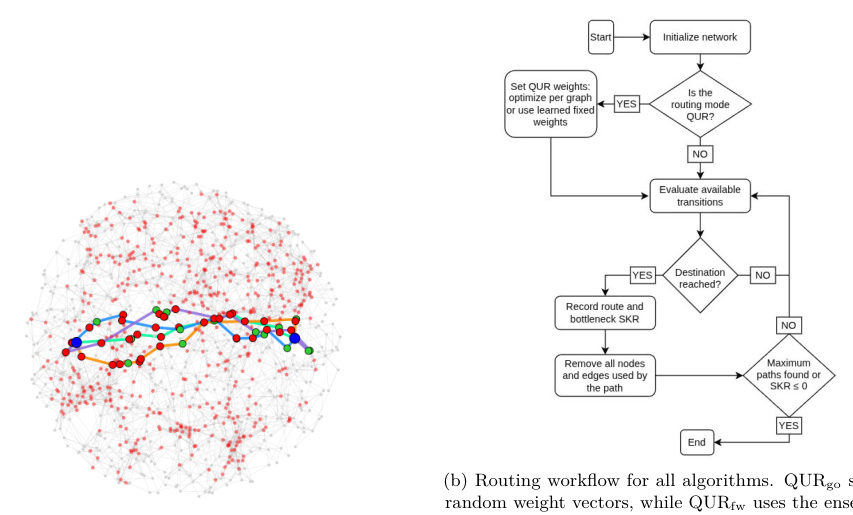
<figcaption class="paper-figure-caption"><b>Fig 1.</b> Figure 1: Simulated network and routing procedure. (a) Example Waxman network at degree threshold D = 8, when almost 53% of the nodes are untrusted. (b) Workflow used by all routing methods.</figcaption>
</figure>
<figure class="paper-figure-card">

<figcaption class="paper-figure-caption"><b>Fig 2.</b> Figure 2: Overall comparison at the default network setting. Bars report QURgo and QURfw relative to A* or Max–Min. Average node saving is the mean of internal and unique node saving. Average SKR per node is the mean of relative changes in the two efficiency measures defined in Eqs. 4 and 5. Positive values favor the corresponding QUR mode.</figcaption>
</figure>
<figure class="paper-figure-card">
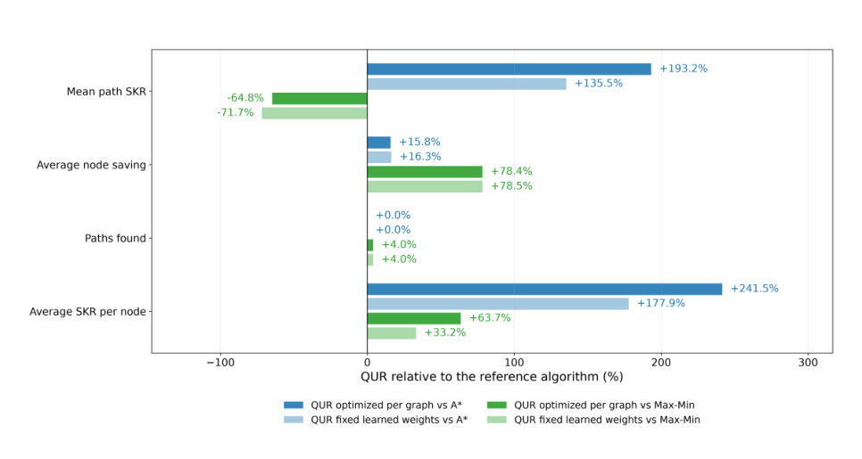
<figcaption class="paper-figure-caption"><b>Fig 3.</b> Figure 2 reveals three distinct routing regimes. A* preferentially selects geometrically short routes, but these routes can contain weak quantum transitions and therefore provide relatively low bottleneck SKR. Max–Min takes the opposite approach, it maximizes the weakest transition along the route, but does this at the cost of substantially larger node use. QUR occupies the intermediate operating regime, improving the bottleneck SKR of the short routes favored by A* while avoiding the large resource requirement associated with Max–Min.</figcaption>
</figure>
<figure class="paper-figure-card">
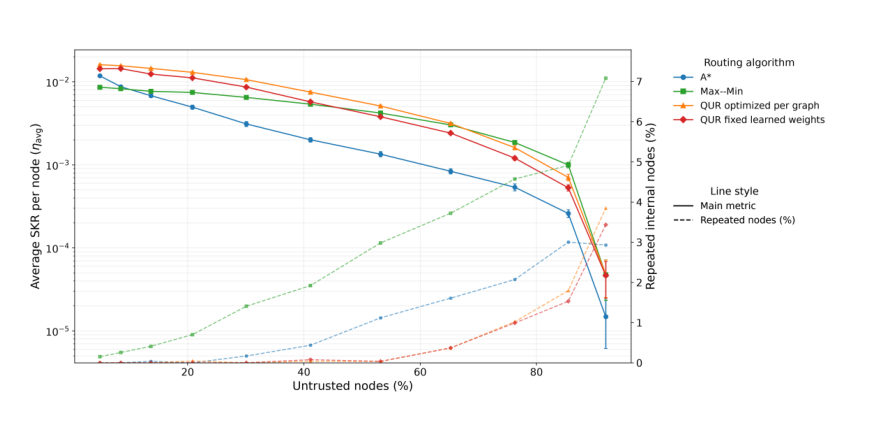
<figcaption class="paper-figure-caption"><b>Fig 4.</b> Figure 3: Average SKR efficiency and node reuse as functions of the untrusted node percentage. Solid curves show ηavg from Eq. 6. Dashed curves show repeated nodes as a percentage of all nodes.</figcaption>
</figure>
<figure class="paper-figure-card">
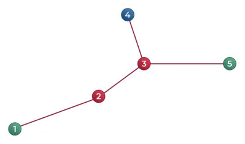
<figcaption class="paper-figure-caption"><b>Fig 5.</b> Figure 4: Example of within-route node reuse. Green nodes are trusted and red nodes are untrusted. The path constructed from the route is 1→2→3→4→3→5, in which node 3 appears in two separate transitions i.e. 1→2→3 →4 and 4→3→5.</figcaption>
</figure>
</div>
<p><strong>Summary.</strong> This paper introduces Quantum Utility Routing (QUR), a novel weighted framework designed to optimize path selection in CV-QKD networks. QUR balances the need for high secret key rates against the cost of network resources, accounting for both trusted and untrusted relays. The results show that QUR provides a superior trade-off compared to existing routing methods, demonstrating a practical approach to designing robust quantum communication infrastructure.</p>
<p><strong>Why it may be interesting.</strong> This work is highly relevant as it applies advanced graph theory and optimization techniques to the practical engineering challenges of quantum network deployment, specifically optimizing resource allocation alongside quantum security guarantees.</p>
<details>
<summary>Detailed structure</summary>
<p><strong>Main problem.</strong> The paper addresses the challenge of developing an optimal routing strategy for Continuous-Variable Quantum Key Distribution (CV-QKD) networks that must balance cryptographic key generation rates, network resource usage, and the varying trust levels of intermediate relays.</p>
<p><strong>Main result.</strong> The proposed Quantum Utility Routing (QUR) framework significantly improves the mean path Secret Key Rate (SKR) compared to geometric routing (A*) while consuming fewer network resources than bottleneck-focused methods (Max-Min).</p>
<p><strong>Method.</strong> QUR is a weighted routing framework that minimizes a composite cost function incorporating SKR, distance, relay usage, and hop count. It compares its performance against A* and Max-Min benchmarks.</p>
<p><strong>Model / system.</strong> The system models CV-QKD networks built on a Waxman random graph, featuring a mix of trusted point-to-point links and untrusted relays that perform CV Bell measurements.</p>
<p><strong>Key observables.</strong> Secret Key Rate (SKR), which is the primary cryptographic metric; and network resource consumption metrics like distance and hop count.</p>
<p><strong>Important parameters / regimes.</strong> The weight vector (w) controlling the trade-off between cryptographic performance and resource cost; the degree threshold (D) defining the fraction of untrusted nodes.</p>
<p><strong>Assumptions / limitations.</strong> The analysis relies on a composable finite-size security framework for Gaussian quantum networks, assuming the network topology and link parameters are known.</p>
<p><strong>Figures summary.</strong> Figure 1 illustrates the network setup (Waxman graph) showing source, destination, and untrusted nodes, and a workflow comparing the pathfinding mechanisms of A*, Max-Min, QURgo, and QURfw.</p>
<p><strong>Paper structure.</strong> The paper first establishes the physical model and key rate calculation using Gaussian quantum information theory. It then introduces the multi-objective QUR framework, defining the cost function and variants ($    ext{QUR}<em fw>{go},  ext{QUR}</em>$). Finally, it benchmarks QUR against established routing algorithms using network simulations.</p>
</details>
<details>
<summary>Abstract</summary>
<p>Continuous-variable quantum key distribution (CV-QKD) networks require routing strategies that account simultaneously for secret key generation, relay trust and finite network resources. We introduce Quantum Utility Routing (QUR), a weighted routing framework for networks combining trusted point-to-point links with untrusted CV Bell measurement relays. Transition level composable finite size secret key rates (SKRs) are incorporated directly into the route search, allowing QUR to balance bottleneck SKR against route geometry and resource use. We consider graph optimized QUR (QUR$_{\mathrm{go}}$) and a fixed weight implementation (QUR$_{\mathrm{fw}}$) that uses machine learning to avoid repeated graph specific weight optimization, and benchmark both against A<em> and Max--Min routing. At the default network configuration, QUR$_{\mathrm{go}}$ and QUR$_{\mathrm{fw}}$ improve the mean path SKR relative to A</em> while requiring substantially fewer network resources than Max--Min. The framework also maintains secure connectivity over a broad range of trusted node availability by exploiting untrusted infrastructure as measurement relays. These results demonstrate that routing in CV-QKD networks can be treated as a configurable trade off between cryptographic performance and network resource consumption.</p>
</details>
<p><sub><a href="#top">↑ back to top</a></sub></p>

<p><a id="paper-2610.02648"></a></p>
<h3 id="random-quantum-ldpc-codes-approaching-the-gilbert-varshamov-bound"><a href="http://arxiv.org/abs/2610.02648v1">Random Quantum LDPC Codes Approaching the Gilbert-Varshamov Bound</a></h3>
<p><strong>Authors:</strong> Tushant Mittal, Shashank Srivastava, Madhur Tulsiani, Mary Wootters<br>
<strong>Type:</strong> theory · <strong>Category:</strong> quantum information and computing · <strong>PDF:</strong> <a href="https://arxiv.org/pdf/2610.02648v1">https://arxiv.org/pdf/2610.02648v1</a><br>
<strong>Analysis basis:</strong> full PDF text, analyzed in chunks</p>
<div class="figure-strip-hint">↔ Scroll figures horizontally</div>
<div class="paper-figures-scroll">
<figure class="paper-figure-card">
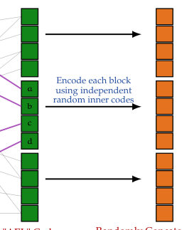
<figcaption class="paper-figure-caption"><b>Fig 1.</b> Figure 1: A schema of our random model.</figcaption>
</figure>
</div>
<p><strong>Summary.</strong> This paper constructs an infinite family of Quantum Low-Density Parity-Check (QLDPC) codes that provably approach the quantum Gilbert-Varshamov bound. By addressing the challenge of code degeneracy, the authors show that these codes can match the performance of random stabilizer codes across various quantum channels. This advances the practical design of high-rate, good-distance quantum error-correcting codes.</p>
<p><strong>Why it may be interesting.</strong> This work provides concrete, constructive methods for designing quantum error-correcting codes (QEC) that approach fundamental theoretical limits (like the GV bound), which is central to fault-tolerant quantum computation.</p>
<details>
<summary>Detailed structure</summary>
<p><strong>Main problem.</strong> To prove that Quantum Low-Density Parity-Check (QLDPC) codes can achieve the quantum Gilbert-Varshamov (GV) bound, and to show that random QLDPC ensembles match the performance of random stabilizer codes on various quantum channels.</p>
<p><strong>Main result.</strong> The authors construct an ensemble of QLDPC codes such that a random code approaches the quantum GV bound with high probability, matching the performance of random stabilizer codes for channels like the erasure and depolarizing channels.</p>
<p><strong>Method.</strong> The construction involves combining low-degeneracy QLDPC codes (obtained via the Alon, Edmonds, and Luby distance amplification procedure) with random inner codes via concatenation, viewed as a quantum analogue of Thommesen's construction.</p>
<p><strong>Model / system.</strong> The work focuses on quantum stabilizer codes, specifically QLDPC codes defined by row-sparse parity-check matrices. The analysis is conducted using the linear-algebraic formulation of stabilizer spaces.</p>
<p><strong>Key observables.</strong> Rate ($R$), relative distance ($\delta$), and the quantum Gilbert-Varshamov (GV) bound ($\delta_{GV}(p, R)$).</p>
<p><strong>Important parameters / regimes.</strong> The alphabet size $p$, the degeneracy parameter $\eta$, and the error tolerance $\epsilon$.</p>
<p><strong>Assumptions / limitations.</strong> The construction relies on the ability to control the degeneracy of the QLDPC codes using the AEL procedure, which is necessary because QLDPC codes are inherently degenerate.</p>
<p><strong>Figures summary.</strong> Figure 1 illustrates the random model schema: Base Code $
ightarrow$ "AEL" Code $
ightarrow$ Randomly Concatenated Code.</p>
<p><strong>Paper structure.</strong> The paper develops by first establishing the need to control degeneracy, then detailing the AEL construction to achieve low-degeneracy outer codes approaching the quantum Singleton bound, and finally combining this with random inner codes to prove the overall approach to the GV bound.</p>
</details>
<details>
<summary>Abstract</summary>
<p>We show that for any $R,ε>0$ and any prime $p\geq 2$, there exists an infinite family of $p$-ary quantum low-density parity-check (QLDPC) codes, rate $R$, checks of weight $O_ε(1)$, and normalized distance at least $δ_{\mathrm{GV}}(p,R)-ε$. Here, $δ_{\mathrm{GV}}(p,R)$ denotes the quantum Gilbert-Varshamov (GV) bound for $p$-ary stabilizer codes.   In fact, we construct an ensemble of such QLDPC codes, such that a random code from this ensemble is close to the GV bound with high probability. Moreover, this ensemble matches the performance of random stabilizer codes on several quantum channels. Specifically, it approaches the quantum capacity of the erasure channel and the hashing bound for memoryless Pauli channels, including the depolarizing channel.   A significant challenge in working with QLDPC codes is that they are necessarily \emph{degenerate}, i.e., contain many low-weight stabilizers. A key contribution of our work is a construction of QLDPC codes with quantitative control on their degeneracy. These codes are obtained by combining known constructions of asymptotically good QLDPC codes with the expander-based distance amplification procedure of Alon, Edmonds, and Luby [FOCS'95].   Our random ensemble is constructed by starting with these low-degeneracy QLDPC codes near the quantum Singleton bound and concatenating each coordinate with a random inner code. This can be viewed as a quantum analogue of Thommesen's construction, and as an LDPC version of a result of Ouyang, with an appropriately designed outer code.</p>
</details>
<p><sub><a href="#top">↑ back to top</a></sub></p>

<p><a id="paper-2610.02942"></a></p>
<h3 id="resource-theory-of-aquaternionicity-every-pure-state-is-a-replicable-resource-for-exact-simulation-of-arbitrary-quantum-operations"><a href="http://arxiv.org/abs/2610.02942v1">Resource Theory of Aquaternionicity: Every Pure State Is a Replicable Resource for Exact Simulation of Arbitrary Quantum Operations</a></h3>
<p><strong>Authors:</strong> Hayato Arai, Yasuaki Nakayama<br>
<strong>Type:</strong> theory · <strong>Category:</strong> quantum information and computing · <strong>PDF:</strong> <a href="https://arxiv.org/pdf/2610.02942v1">https://arxiv.org/pdf/2610.02942v1</a><br>
<strong>Analysis basis:</strong> full PDF text, analyzed in chunks</p>
<div class="figure-strip-hint">↔ Scroll figures horizontally</div>
<div class="paper-figures-scroll">
<figure class="paper-figure-card">
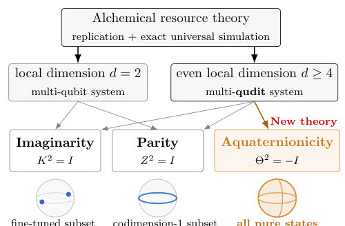
<figcaption class="paper-figure-caption"><b>Fig 1.</b> FIG. 1. Selected landscape for alchemical resource theories. For multi-qubit systems, the inverse problem yields imaginar- ity and parity asymmetry. For even local dimension d ≥4, aquaternionicity emerges as an additional quaternionic solu- tion, for which every pure state is alchemical.</figcaption>
</figure>
</div>
<p><strong>Summary.</strong> This paper introduces 'aquaternionicity' as a novel, highly robust resource theory for quantum qudits. It proves that this theory is extremal because every pure state is a resource and it maximizes the dimension of the mixing set. This robustness allows for recalibration-free exact quantum simulation, significantly outperforming existing theories under structured noise.</p>
<p><strong>Why it may be interesting.</strong> This work provides a rigorous, algebraic framework for quantifying resource robustness, showing how specific symmetries (like the quaternionic structure) lead to superior performance in quantum information tasks like simulation under noise.</p>
<details>
<summary>Detailed structure</summary>
<p><strong>Main problem.</strong> To characterize 'alchemical resource theories'—resource theories where a nonfree state is exactly replicable by free operations and enables the exact simulation of arbitrary quantum operations.</p>
<p><strong>Main result.</strong> Aquaternionicity, based on a quaternionic structure, is shown to be extremal, saturating a universal bound ($\dim M_g = 2d-4$) and enabling recalibration-free exact simulation under structured noise.</p>
<p><strong>Method.</strong> The authors define and compare resource theories (Imaginarity, Parity asymmetry, Aquaternionicity) using algebraic constraints ($\Theta^2=-I$) and analyze the dimension of the admissible pure-mixing set and noise-invariant supports.</p>
<p><strong>Model / system.</strong> The study uses quantum qudits of even dimension $d \geq 4$ and compares three resource theories defined by different symmetries (Imaginarity, Parity asymmetry, Aquaternionicity). The analysis is applied to structured noise models like basis dephasing and amplitude damping.</p>
<p><strong>Key observables.</strong> Dimension of the admissible pure-mixing set ($\dim M_g$), and the dimension of the noise-invariant alchemical support ($r_
u$).</p>
<p><strong>Important parameters / regimes.</strong> Even dimension $d=2n \geq 4$; the antiunitary operator $\Theta$ satisfying $\Theta^2=-I$.</p>
<p><strong>Assumptions / limitations.</strong> The advantage demonstrated is specific to structured noise classes and does not imply universal dominance over all arbitrary CPTP noise.</p>
<p><strong>Figures summary.</strong> Table I compares the three theories across several properties, showing aquaternionicity saturates the dimension bound. Table III compares the noise-invariant support dimensions ($r_{	ext{Im}}, r_{	ext{Par}}, r_{	ext{Aq}}$) for two specific noise models.</p>
<p><strong>Paper structure.</strong> The paper first establishes the concept of alchemical resource theories. It then introduces aquaternionicity for $d \geq 4$, proving its extremal properties. Finally, it demonstrates the practical advantage of aquaternionicity by analyzing its robustness against specific structured noise channels compared to other theories.</p>
</details>
<details>
<summary>Abstract</summary>
<p>An alchemical resource theory admits a nonfree state that can be exactly replicated by free operations and whose finitely many copies enable exact simulation of arbitrary quantum instruments. The only known nontrivial examples, imaginarity and parity asymmetry, exhaust the qubit case (arXiv:2609.12988) and exhibit an all-or-nothing property: any nonmaximal resource exactly simulates only free unitaries. We introduce aquaternionicity for even-dimensional qudits $d\ge4$, based on a quaternionic structure represented by an antiunitary $Θ$ with $Θ^2=-I$. It is extremal in two senses: every pure state is alchemical, and alchemicality is maximally abundant under mixing. Within this framework, for any nontrivial $d$-dimensional resource theory and pure alchemical state $g$, the admissible pure-mixing set satisfies $\dim\mathcal M_g\le 2d-4,$ which aquaternionicity saturates for every pure state. Conversely, these two extremal properties characterize the quaternionic structure. Because every pure state is alchemical, the initial resource can be chosen to match the known noise structure. Moreover, when the noisy resource states remain within a common isotropic subspace, the same free processor works exactly for all of them while returning the resource unchanged. This enables recalibration-free exact simulation, including universal quantum computation, and is realized for standard dephasing and dissipative noise, where aquaternionicity substantially outperforms imaginarity and parity asymmetry.</p>
</details>
<p><sub><a href="#top">↑ back to top</a></sub></p>

<p><a id="paper-2610.02392"></a></p>
<h3 id="singer-difference-set-qudit-stabilizer-codes-from-non-degenerate-quadrics-in-pgdqpgdq-construction-structural-theorems-and-monte-carlo-performance"><a href="http://arxiv.org/abs/2610.02392v1">Singer-Difference-Set Qudit Stabilizer Codes from Non-Degenerate Quadrics in PG(d,q)PG(d,q): Construction, Structural Theorems, and Monte-Carlo Performance</a></h3>
<p><strong>Authors:</strong> Michel Kulhandjian, Lajos Hanzo<br>
<strong>Type:</strong> theory · <strong>Category:</strong> quantum information and computing · <strong>PDF:</strong> <a href="https://arxiv.org/pdf/2610.02392v1">https://arxiv.org/pdf/2610.02392v1</a><br>
<strong>Analysis basis:</strong> full PDF text, analyzed in chunks</p>
<div class="figure-strip-hint">↔ Scroll figures horizontally</div>
<div class="paper-figures-scroll">
<figure class="paper-figure-card">
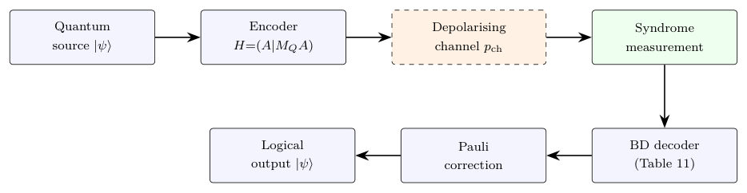
<figcaption class="paper-figure-caption"><b>Fig 1.</b> FIGURE 1. System architecture for Q(q, d) on a quantum channel. A quantum source emits a state |ψ⟩on k logical qudits; the encoder applies the Clifford circuit induced by H = (A|MQA), mapping to n physical qudits which propagate through a depolarising channel (single-photon or single-atom physical layer). Stabilizer syndromes are extracted by non-destructive Pauli measurement, the bounded-distance decoder suggests a Pauli correction, and the corrected state is the logical output. By Theorem 19, the encoder factors into a Hadamard layer and a CZ(M) phase circuit with M a symmetric circulant determined by the formal-quadric indicator τ Q.</figcaption>
</figure>
<figure class="paper-figure-card">

<figcaption class="paper-figure-caption"><b>Fig 2.</b> FIGURE 2. Singer first column τ H ∈F40 2 for PG(3, 3) in the chosen indexing. Reading positions j = 0, 1, . . . , 39 left to right, (τ H)j = 1 iff position j corresponds to a point of PG(3, 3) lying on the canonical Singer hyperplane. Hamming weight is 13 = θ2(3), matching the number of points on a hyperplane of PG(3, 3). The vector τ H generates the full 40 × 40 Singer-circulant incidence matrix A (Eq. (33) below), and is the foundational classical-design object that the quantum construction inherits.</figcaption>
</figure>
<figure class="paper-figure-card">
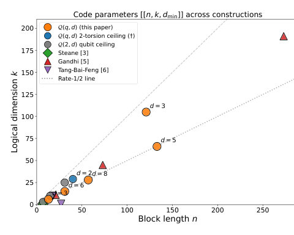
<figcaption class="paper-figure-caption"><b>Fig 3.</b> FIGURE 3. Code-parameter scatter plot from Tables 7 and 8: logical dimension k versus block length n for the Q(q, d) family (this paper) alongside the closest prior-art constructions. Annotations show dmin where the entry exceeds the 2-torsion / q=2 ceilings. The dotted line marks the rate- 1</figcaption>
</figure>
<figure class="paper-figure-card">
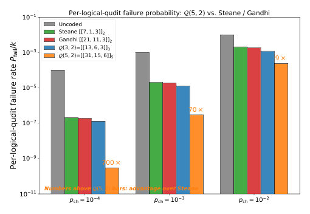
<figcaption class="paper-figure-caption"><b>Fig 4.</b> FIGURE 4. Visual rendering of Table 10: per-logical-qudit failure rate Pfail/k for the headline codes at three representative depolarising channel rates pch ∈{10−4, 10−3, 10−2}. The Q(5, 2) bar is consistently the lowest, with the advantage factor over Steane [[7, 1, 3]]2 annotated above each bar. The advantage grows with smaller pch because the double-error correcting Q(5, 2) (dmin = 6) scales as Pfail ∼p3 ch, whereas Steane and Gandhi scale as p2 ch.</figcaption>
</figure>
<figure class="paper-figure-card">
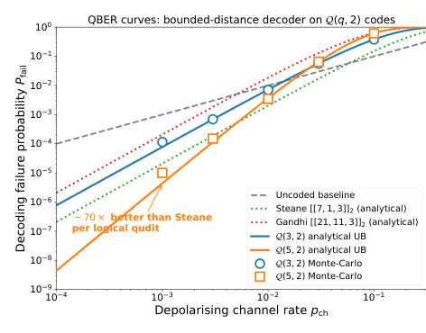
<figcaption class="paper-figure-caption"><b>Fig 5.</b> FIGURE 5. Decoding failure probability Pfail versus depolarising channel rate pch. Solid curves are analytical upper bounds from (44); markers are Monte-Carlo measurements with the bounded-distance decoder. The dashed grey line is the uncoded single-qudit baseline Pfail = pch. Q(5, 2) achieves ∼70× improvement over Steane’s [[7, 1, 3]]2 on a per-logical-qudit basis at pch = 10−3.</figcaption>
</figure>
</div>
<p><strong>Summary.</strong> This paper introduces Q(q, d), a new family of qudit stabilizer codes built using Singer difference sets and non-degenerate quadrics in projective geometry. The authors establish several structural theorems and demonstrate that these codes offer superior error correction performance compared to existing qubit codes. This work advances the theoretical understanding of high-dimensional quantum error correction.</p>
<p><strong>Why it may be interesting.</strong> The focus on qudits and the combination of algebraic geometry (quadrics in PG(d,q)) with coding theory provides a powerful, mathematically rigorous framework for designing next-generation quantum error correction codes.</p>
<details>
<summary>Detailed structure</summary>
<p><strong>Main problem.</strong> The paper proposes a novel family of qudit stabilizer codes, Q(q, d), designed to protect quantum information against noise.</p>
<p><strong>Main result.</strong> The construction yields codes with proven structural theorems and demonstrates that Q(5, 2) achieves a significant improvement in error correction performance over established codes like the Steane code.</p>
<p><strong>Method.</strong> The codes are constructed by coupling a Singer difference set incidence matrix (A) with a quadric circulant matrix (M_Q) within the parity-check matrix H.</p>
<p><strong>Model / system.</strong> The model is a qudit stabilizer code, applicable to quantum communication channels (fibre-optic/free-space) or quantum memory, where the physical system supports qudits (q &gt; 2).</p>
<p><strong>Key observables.</strong> Code parameters such as $[[n, k, d]]_q$, decoding failure probability ($P_{fail}$), and the logical dimension $k(p, d)$.</p>
<p><strong>Important parameters / regimes.</strong> The code is parameterized by prime power $q$ and dimension $d \geq 2$; the flagship family is $Q(p, 2)$.</p>
<p><strong>Assumptions / limitations.</strong> The analysis relies on five novel structural theorems, including a cross-correlation modular-constancy identity and a paired column-rigidity equality.</p>
<p><strong>Figures summary.</strong> Figures illustrate the system architecture for Q(q, d) on a quantum channel and plot the decoding failure probability ($P_{fail}$) versus the depolarizing channel rate ($p_{ch}$).</p>
<p><strong>Paper structure.</strong> The paper introduces the construction, proves five structural theorems, derives closed-form code dimensions, presents specific examples (e.g., Q(3, 2), Q(5, 2)), and validates performance via Monte-Carlo simulations.</p>
</details>
<details>
<summary>Abstract</summary>
<p>We propose Q(q,d), a family of q-ary non-CSS qudit stabilizer codes with prime power q and dimension d &gt;= 2, constructed from Singer difference sets and non-degenerate quadrics in PG(d,q). The parity check H = (A | M_Q A) couples the Singer-circulant incidence matrix A with the quadric circulant M_Q, and a Cancellation Lemma uses the identity (k - lambda) = q^{d-1} = 0 mod p to make H symplectic-isotropic over F_q.   Five structural theorems carry the novelty: a cross-correlation modular-constancy identity nu = 1 mod q at q odd, d &gt;= 3, with a two-value pattern that proves a 2-torsion distance ceiling; a CRT zero-count identity; an explicit Clifford bridge identifying Q(q,2) as a graph-state encoding of the trivial Singer CSS code, with the 2021 low-density-spreading (LDS) sign-flip pattern realised by a symmetric circulant; a paired column-rigidity equality d_min = R_P + 1; and a lower bound d_min(Q(7,2)) &gt;= 8 from an exhaustive Singer-Frobenius search.   A Hamada-Smith specialisation yields the closed-form logical dimension k(p,d) = theta_d(p) - C(p+d-1, d) - 1, and the flagship Q(p,2) = [[p^2 + p + 1, p(p+1)/2, d_min]]_p attains asymptotic rate one-half. We conjecture d_min(Q(p,2)) = p + 1 for odd primes, proven at p = 5 and lower-bounded to &gt;= 8 at p = 7. Instances include Q(3,2) = [[13,6,3]]_3, Q(5,2) = [[31,15,6]]_5, Q(7,2) = [[57,28, d&gt;=8]]_7, and Q(3,4) = [[121,105,3]]_3. Monte-Carlo over 1.5 x 10^6 trials shows Q(5,2) achieves a 70-fold per-logical-qudit improvement over Steane [[7,1,3]]_2 at depolarising rate 10^-3 with zero silent logical errors. A textbook bounded-distance decoder is used; Berlekamp-Massey-style cyclic decoding is left as the natural sequel.</p>
</details>
<p><sub><a href="#top">↑ back to top</a></sub></p>

<p><a id="paper-2610.03714"></a></p>
<h3 id="spidercss-scalable-fault-tolerant-css-state-preparation"><a href="http://arxiv.org/abs/2610.03714v1">SpiderCSS: Scalable Fault-Tolerant CSS State Preparation</a></h3>
<p><strong>Authors:</strong> Boldizsár Poór, Andrey Boris Khesin, Sarah Meng Li, Benjamin Rodatz, John van de Wetering, Richie Yeung<br>
<strong>Type:</strong> theory · <strong>Category:</strong> quantum information and computing · <strong>PDF:</strong> <a href="https://arxiv.org/pdf/2610.03714v1">https://arxiv.org/pdf/2610.03714v1</a><br>
<strong>Analysis basis:</strong> full PDF text, analyzed in chunks</p>
<div class="figure-strip-hint">↔ Scroll figures horizontally</div>
<div class="paper-figures-scroll">
<figure class="paper-figure-card">
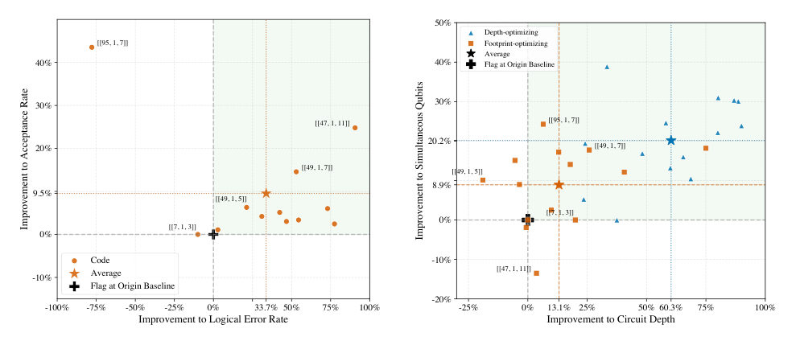
<figcaption class="paper-figure-caption"><b>Fig 1.</b> FIG. 1: Percentage improvements of SpiderCSS over Flag at Origin (FaO) across the benchmarked CSS states. Each point represents a CSS state, and the cross at the origin is the FaO baseline. Positive values mean SpiderCSS outperforms FaO (lower logical error rate, depth or qubit count; higher acceptance rate), so points in the shaded top-right quadrant improve on both metrics. Stars mark the mean improvements, with their values indicated on the axes.</figcaption>
</figure>
<figure class="paper-figure-card">
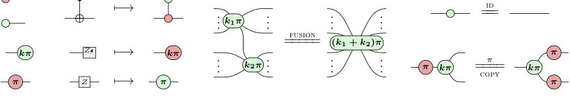
<figcaption class="paper-figure-caption"><b>Fig 2.</b> FIG. 2: ZX overview. (a) Translation between quantum circuits and ZX-diagrams. The k parameter in the representation of Z- and X-measurements corresponds to the measurement outcome. Note that a Z-spider is used to represent an X-type measurement and state preparation, and vice versa for an X-spider. (b) A selection of ZX-rewrites. k, k1, k2 ∈{0, 1}.</figcaption>
</figure>
<figure class="paper-figure-card">
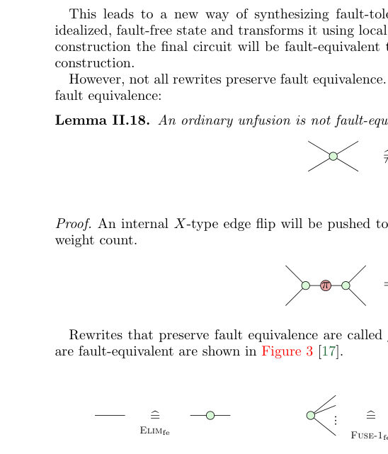
<figcaption class="paper-figure-caption"><b>Fig 3.</b> FIG. 3: The rewrites together with their colour duals are fault-equivalent [17].</figcaption>
</figure>
<figure class="paper-figure-card">
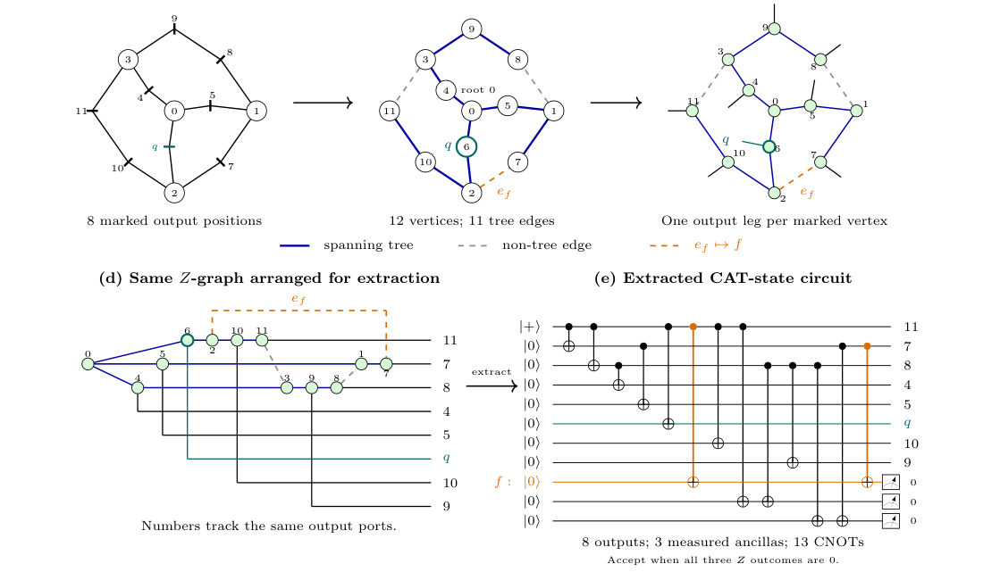
<figcaption class="paper-figure-caption"><b>Fig 4.</b> FIG. 4: Circuit extraction from a fault-tolerant Z-spider expansion. (a) A graph with eight marked output positions. (b) Its expanded graph with a spanning tree rooted at vertex 0. (c) The trivalent Z-graph obtained by attaching an output leg to each marked vertex. (d) The same Z-graph arranged for extraction. (e) The extracted CAT-state preparation circuit, with three verification ancillas. The mark q (vertex 6, teal) becomes output qubit q, while the non-tree edge ef = (2, 7) (orange) is implemented by the two CNOTs involving ancilla f. Numbers identify corresponding vertices and output ports, not spider phases. All three measurement outcomes are post-selected to 0.</figcaption>
</figure>
<figure class="paper-figure-card">
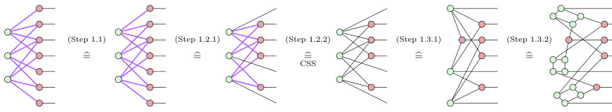
<figcaption class="paper-figure-caption"><b>Fig 5.</b> FIG. 5: Transformation steps towards an extractable ZX-diagram for fault-tolerant state preparation. Step 1.1 brings the diagram into a row-reduced normal form, then, Step 1.2 unidealizes the internal edges, and Step 1.3 unfuses the spiders along safe hook errors (Step 1.3.1) and using SpiderCat [16] (Step 1.3.2).</figcaption>
</figure>
</div>
<p><strong>Summary.</strong> This paper introduces SpiderCSS, a novel, scalable compilation pipeline for generating fault-tolerant circuits to prepare logical states in CSS quantum codes. By leveraging the ZX-calculus and fault-equivalent rewrites, it constructs highly optimized circuits that significantly reduce resource overhead compared to previous state-of-the-art methods. This advancement is crucial for realizing large-scale, reliable quantum computation.</p>
<p><strong>Why it may be interesting.</strong> While focused on abstract quantum computation, the rigorous resource optimization techniques (minimizing CNOTs, depth) are highly relevant to designing physical quantum hardware implementations, such as those using trapped ions or superconducting qubits.</p>
<details>
<summary>Detailed structure</summary>
<p><strong>Main problem.</strong> The paper addresses the critical need for a scalable and provably fault-tolerant method to prepare logical quantum states encoded within Calderbank-Shor-Steane (CSS) codes.</p>
<p><strong>Main result.</strong> The proposed SpiderCSS pipeline significantly outperforms existing methods by achieving substantial reductions in circuit depth and logical error rates while maintaining polynomial scaling with code size.</p>
<p><strong>Method.</strong> It utilizes the ZX-calculus and fault-equivalent rewrites to transform an idealized state specification into a highly optimized, fault-tolerant circuit construction.</p>
<p><strong>Model / system.</strong> The focus is on fault-tolerant quantum computation using CSS stabilizer codes. The analysis is formalized using the ZX-calculus, which maps quantum circuits to graph structures (ZX-diagrams).</p>
<p><strong>Key observables.</strong> Logical error rate, acceptance rate, CNOT count, circuit depth, and qubit footprint.</p>
<p><strong>Important parameters / regimes.</strong> Code distance (up to 15), Pauli noise model, and the efficiency of the compilation pipeline.</p>
<p><strong>Assumptions / limitations.</strong> The method relies on the stabilizer formalism and assumes that fault tolerance can be maintained by using fault-equivalent rewrites, simplifying the verification process.</p>
<p><strong>Figures summary.</strong> Figure 1 compares SpiderCSS and Flag at Origin performance across various metrics (error rate, acceptance rate, depth, qubit count); Figure 2 illustrates the ZX-calculus translation between circuits and diagrams.</p>
<p><strong>Paper structure.</strong> The paper builds from foundational definitions of fault tolerance and the ZX-calculus for CSS states, details the novel SpiderCSS compilation pipeline, and concludes with quantitative comparisons against state-of-the-art methods.</p>
</details>
<details>
<summary>Abstract</summary>
<p>Fault-tolerant preparation of logical states is a critical primitive for the realization of large-scale fault-tolerant quantum computing. This paper introduces SpiderCSS, a scalable compilation pipeline that generates highly-optimized, fault-tolerant state preparation circuits for arbitrary Calderbank-Shor-Steane (CSS) codes. Starting from an idealized specification of a CSS state, we use the ZX-calculus and fault-equivalent rewrites to construct a diagram that prepares the given state while preserving the fault tolerance of the initial ideal ZX-diagram. From this diagram, SpiderCSS constructs a fault-tolerant CSS-state preparation circuit using a modular construction that is CNOT-minimal both within each component and also in the way these components are connected together. By only using fault-equivalent rewrites, the final circuit is provably fault-tolerant without needing expensive verification. Monte Carlo simulations across a variety of CSS codes up to distance 15 show that SpiderCSS scales efficiently and constructs circuits with substantially reduced depth and qubit footprint compared to existing scalable and heuristic methods, while simultaneously achieving an average decrease of 33.7% in logical error rate and an increase of 9.5% in acceptance rate.</p>
</details>
<p><sub><a href="#top">↑ back to top</a></sub></p>

<p><a id="paper-2610.02565"></a></p>
<h3 id="the-complexity-of-entangled-graph-colouring-via-polymorphisms"><a href="http://arxiv.org/abs/2610.02565v1">The complexity of entangled graph colouring via polymorphisms</a></h3>
<p><strong>Authors:</strong> Eric Culf<br>
<strong>Type:</strong> theory · <strong>Category:</strong> quantum information and computing · <strong>PDF:</strong> <a href="https://arxiv.org/pdf/2610.02565v1">https://arxiv.org/pdf/2610.02565v1</a><br>
<strong>Analysis basis:</strong> full PDF text, analyzed in chunks</p>
<div class="figure-strip-hint">↔ Scroll figures horizontally</div>
<div class="paper-figures-scroll">
<figure class="paper-figure-card">
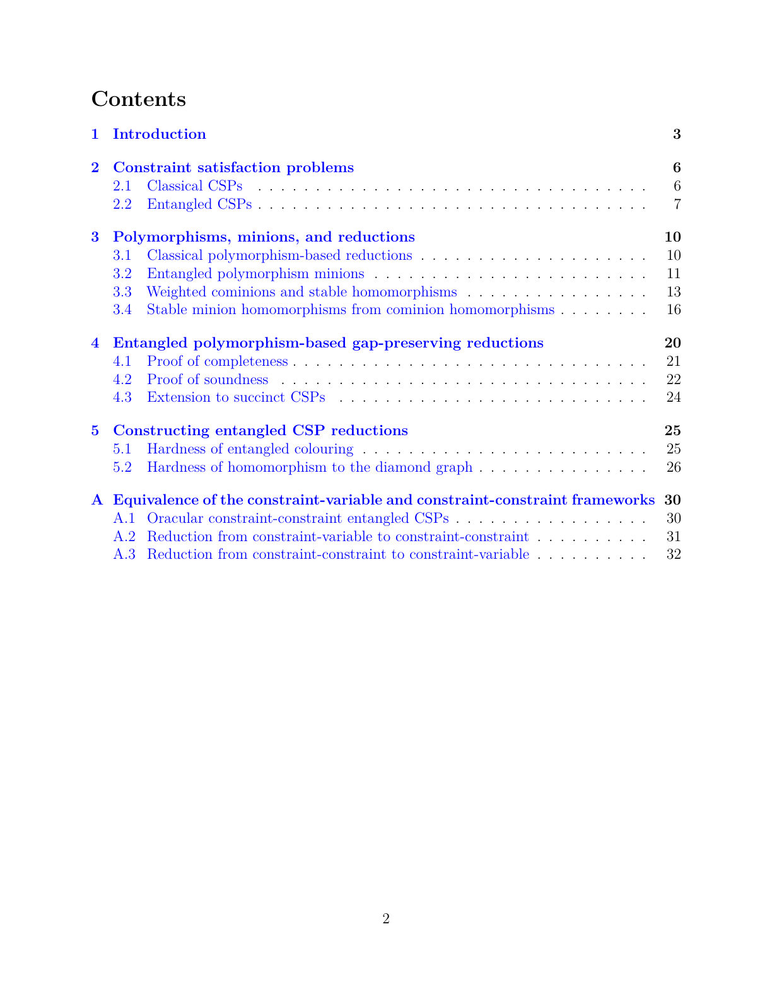
<figcaption class="paper-figure-caption"><b>Fig 1.</b> Low-resolution page preview, page 2</figcaption>
</figure>
<figure class="paper-figure-card">
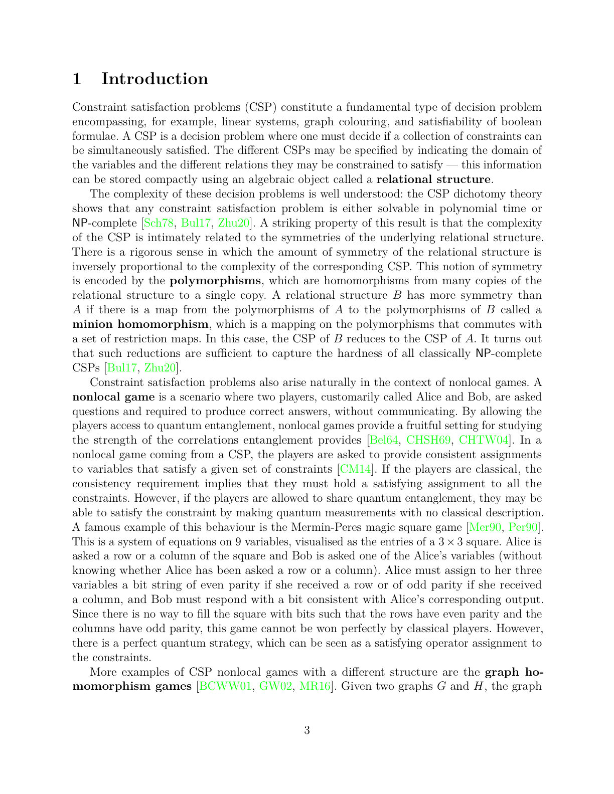
<figcaption class="paper-figure-caption"><b>Fig 2.</b> Low-resolution page preview, page 3</figcaption>
</figure>
<figure class="paper-figure-card">
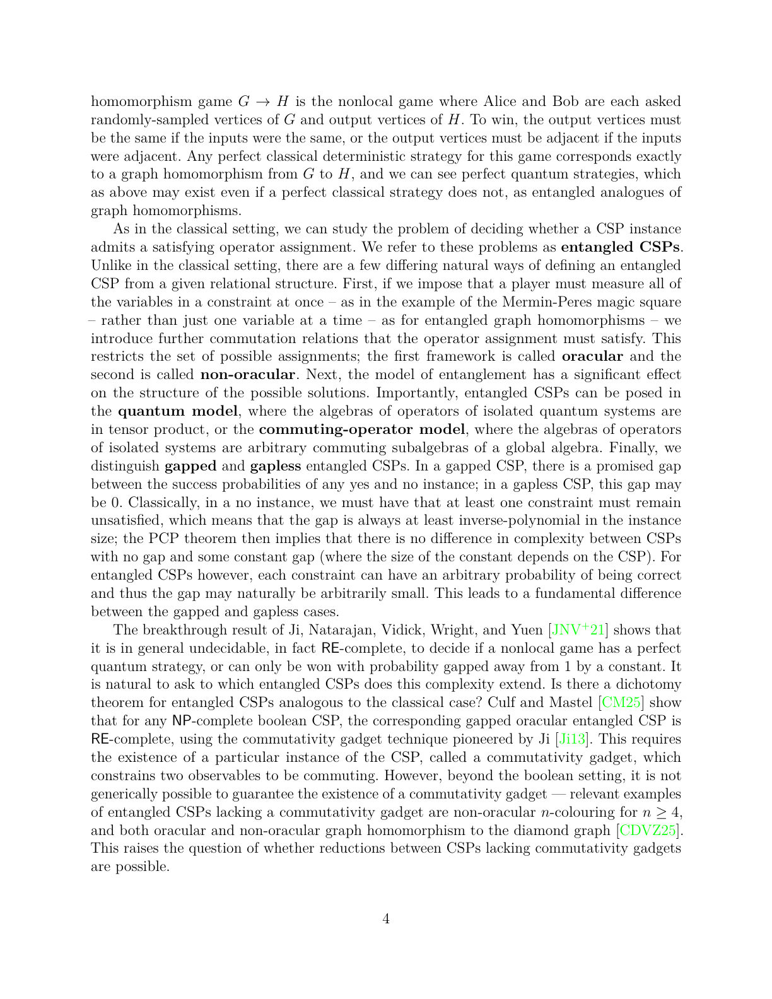
<figcaption class="paper-figure-caption"><b>Fig 3.</b> Low-resolution page preview, page 4</figcaption>
</figure>
<figure class="paper-figure-card">
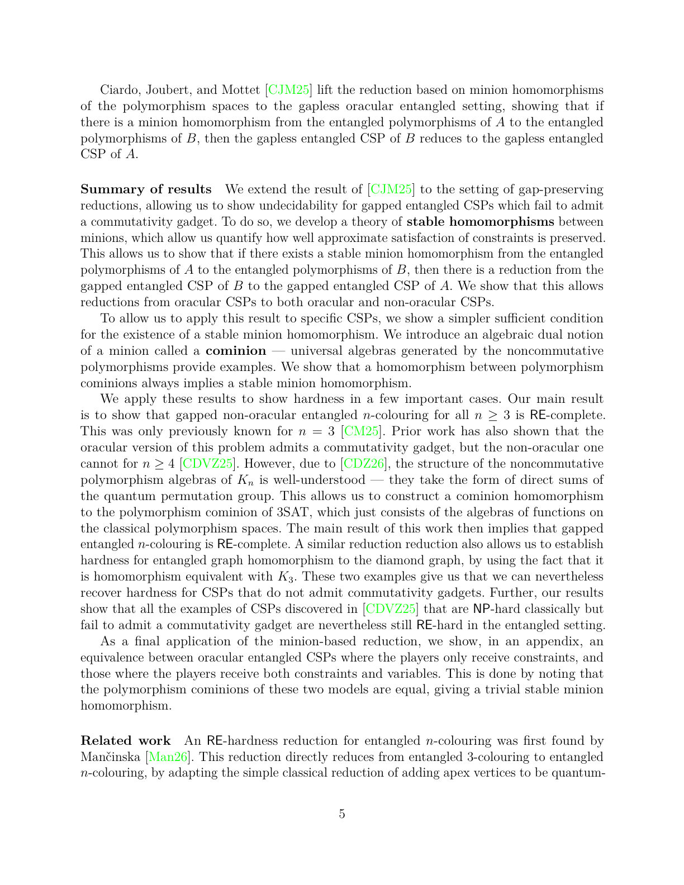
<figcaption class="paper-figure-caption"><b>Fig 4.</b> Low-resolution page preview, page 5</figcaption>
</figure>
<figure class="paper-figure-card">
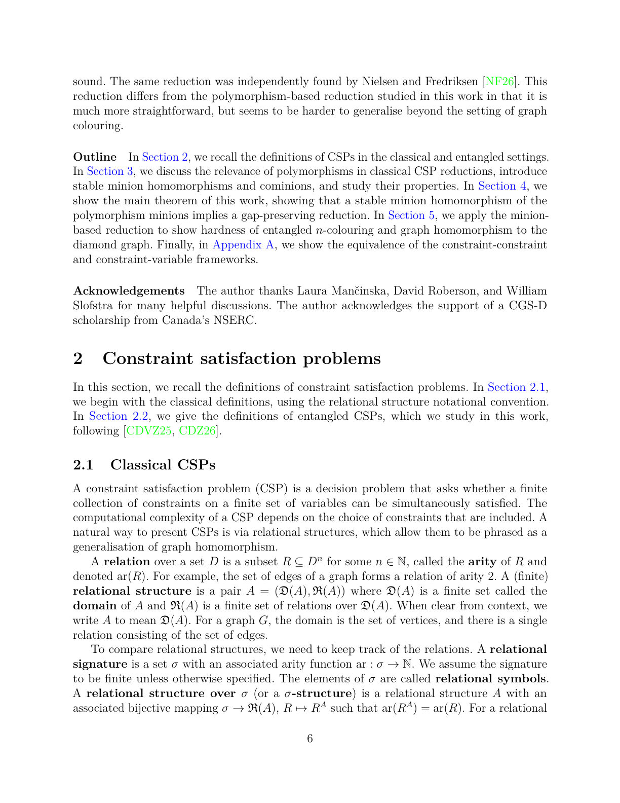
<figcaption class="paper-figure-caption"><b>Fig 5.</b> Low-resolution page preview, page 6</figcaption>
</figure>
</div>
<p><strong>Summary.</strong> This theoretical paper develops advanced algebraic techniques to analyze the computational complexity of quantum constraint satisfaction problems, particularly entangled graph colouring. By generalizing polymorphism-based reductions, the authors prove that this problem is RE-complete for n &gt;= 3. This work advances the understanding of quantum complexity by providing tools for hardness proofs in settings lacking simple classical gadgets.</p>
<p><strong>Why it may be interesting.</strong> It provides a powerful, general algebraic framework to establish computational hardness results for quantum constraint satisfaction problems, which is crucial for understanding the limits of quantum correlation in computation.</p>
<details>
<summary>Detailed structure</summary>
<p><strong>Main problem.</strong> The paper studies the decision complexity of entangled value classes of nonlocal games, specifically focusing on entangled graph colouring.</p>
<p><strong>Main result.</strong> It proves that gapped non-oracular entangled n-colouring for all n &gt;= 3 is RE-complete, extending hardness results beyond those relying on commutativity gadgets.</p>
<p><strong>Method.</strong> The authors generalize polymorphism-based reductions from classical CSPs to 'gap-preserving reductions' for entangled CSPs using an 'entangled analogue of the polymorphisms.'</p>
<p><strong>Model / system.</strong> The model involves nonlocal games derived from Constraint Satisfaction Problems (CSPs) analyzed using $C^*$-algebras to describe quantum operator assignments (tensor product or commuting-operator model).</p>
<p><strong>Key observables.</strong> The gap between success probabilities for yes/no instances (gapped vs. gapless CSPs) and the complexity class (RE-complete).</p>
<p><strong>Important parameters / regimes.</strong> The number of colors (n), the distinction between oracular and non-oracular settings, and the structure of the underlying relational algebra.</p>
<p><strong>Assumptions / limitations.</strong> The analysis relies on developing algebraic structures like 'minions' and their duals, 'cominions,' to establish the necessary reduction machinery.</p>
<p><strong>Paper structure.</strong> The paper builds from classical CSP complexity theory (Schaefer's dichotomy) to introduce entangled CSPs using $C^*$-algebras. It develops the machinery of cominion homomorphisms to generalize reductions, culminating in the proof of RE-completeness for entangled graph colouring.</p>
</details>
<details>
<summary>Abstract</summary>
<p>Constraint satisfaction problems (CSPs) with operator assignments to the variables provide a well-structured setting to study the decision complexity of the entangled value of classes of nonlocal games. Due to the CSP dichotomy theorem, the complexity of constraint satisfaction problems with classical assignments can be fully understood by studying the symmetries of the CSP, in terms of the polymorphisms of the underlying relational structure. In this work, we show that the polymorphism-based reductions between CSPs can be generalised to gap-preserving reductions between entangled CSPs based on an entangled analogue of the polymorphisms. This reduction allows us to show undecidability of entangled graph colouring with more than three colours, a problem that has proved resistant to prior hardness reductions based on commutativity gadgets.</p>
</details>
<p><sub><a href="#top">↑ back to top</a></sub></p>

<p><a id="paper-2610.03705"></a></p>
<h3 id="unitary-complexity-in-polynomial-space"><a href="http://arxiv.org/abs/2610.03705v1">Unitary complexity in polynomial space</a></h3>
<p><strong>Authors:</strong> William Kretschmer, Ewin Tang<br>
<strong>Type:</strong> theory · <strong>Category:</strong> quantum information and computing · <strong>PDF:</strong> <a href="https://arxiv.org/pdf/2610.03705v1">https://arxiv.org/pdf/2610.03705v1</a><br>
<strong>Analysis basis:</strong> full PDF text, analyzed in chunks</p>
<div class="figure-strip-hint">↔ Scroll figures horizontally</div>
<div class="paper-figures-scroll">
<figure class="paper-figure-card">
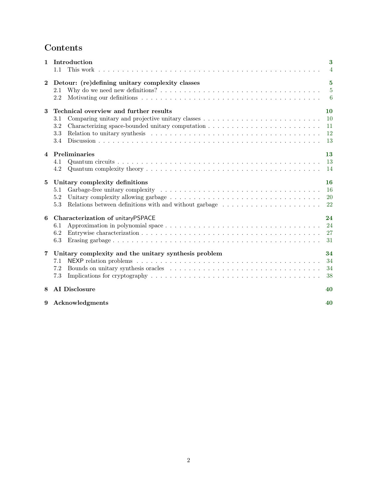
<figcaption class="paper-figure-caption"><b>Fig 1.</b> Low-resolution page preview, page 2</figcaption>
</figure>
<figure class="paper-figure-card">
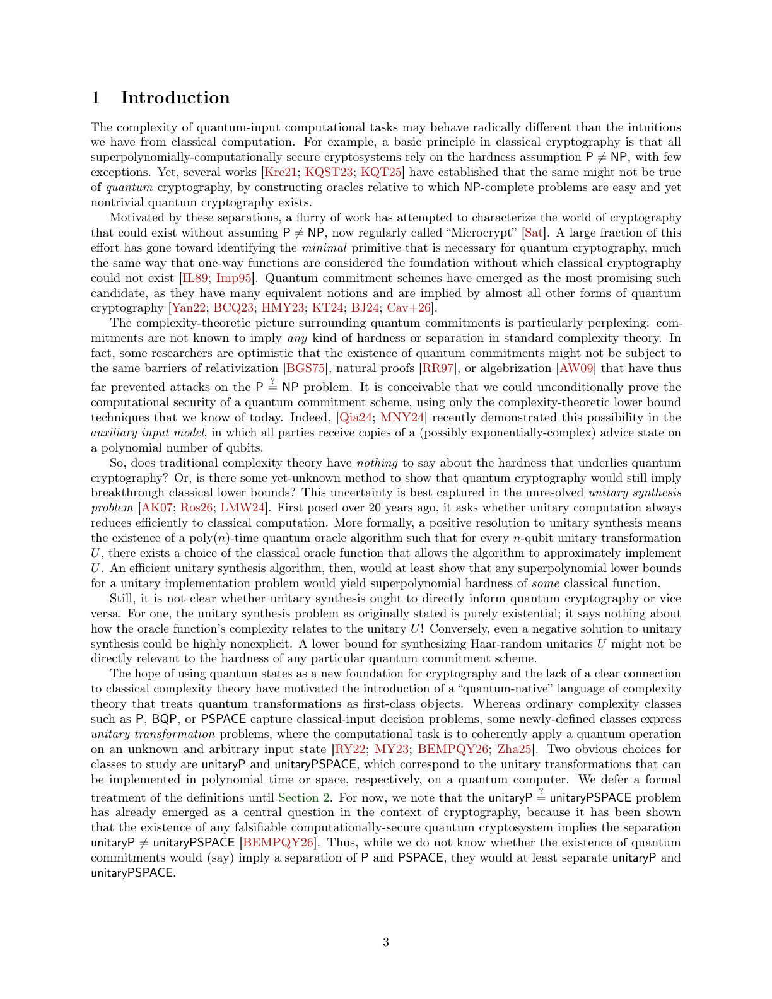
<figcaption class="paper-figure-caption"><b>Fig 2.</b> Low-resolution page preview, page 3</figcaption>
</figure>
<figure class="paper-figure-card">
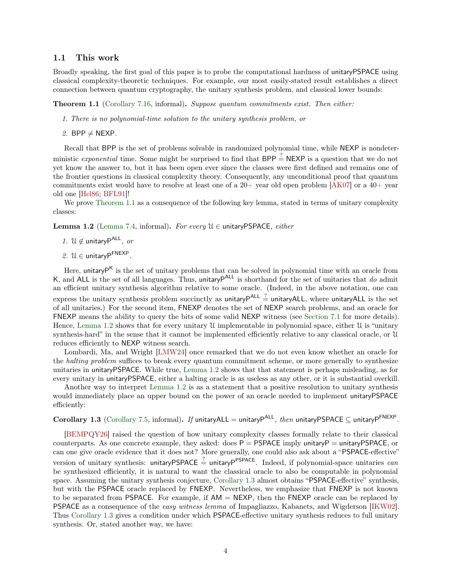
<figcaption class="paper-figure-caption"><b>Fig 3.</b> Low-resolution page preview, page 4</figcaption>
</figure>
<figure class="paper-figure-card">
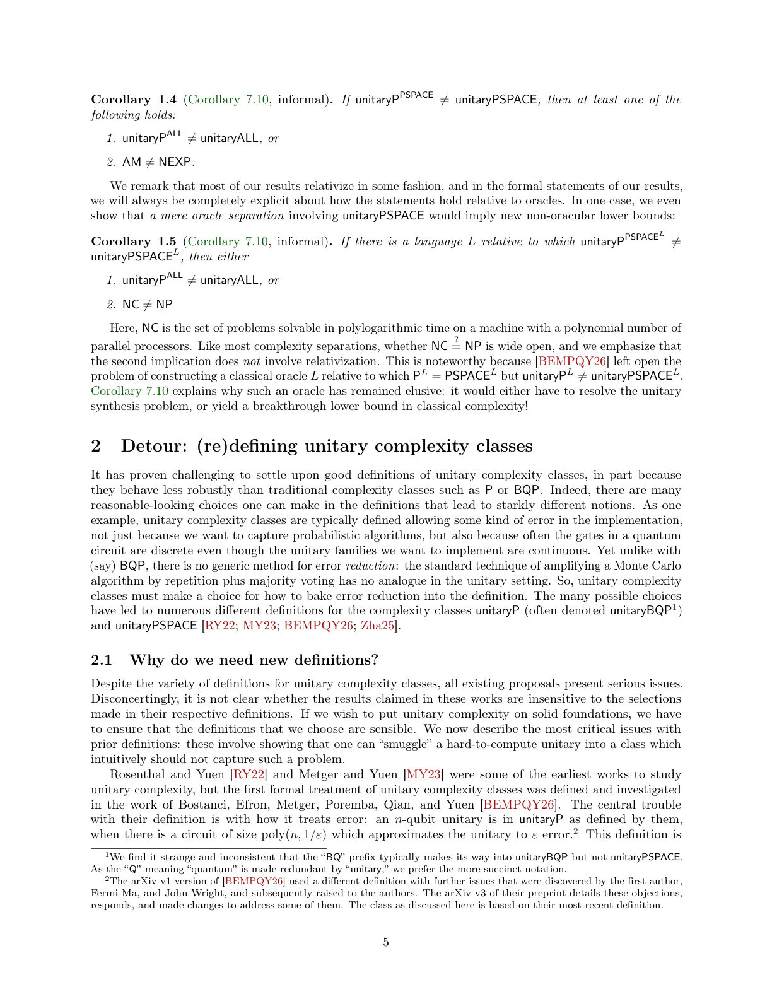
<figcaption class="paper-figure-caption"><b>Fig 4.</b> Low-resolution page preview, page 5</figcaption>
</figure>
<figure class="paper-figure-card">
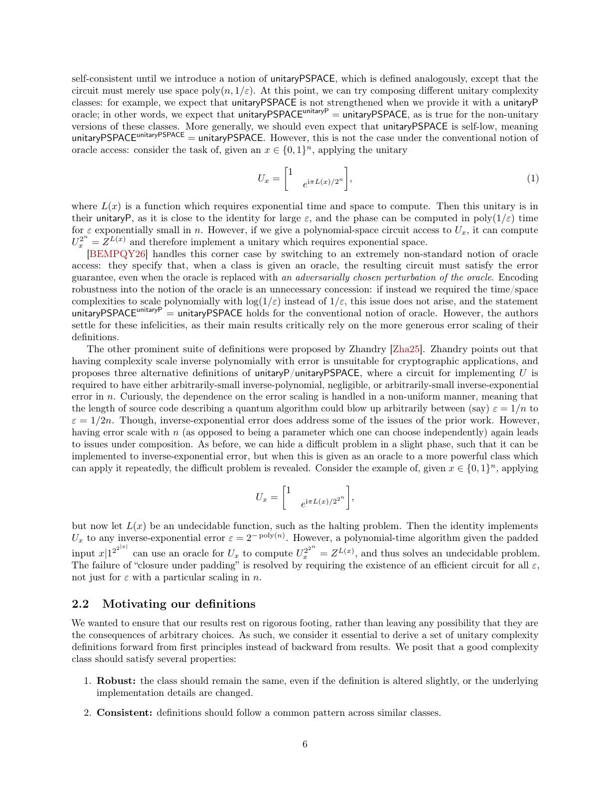
<figcaption class="paper-figure-caption"><b>Fig 5.</b> Low-resolution page preview, page 6</figcaption>
</figure>
</div>
<p><strong>Summary.</strong> This paper explores the computational limits of quantum computation by analyzing the complexity class associated with unitary transformations. It establishes a strong link between the existence of quantum commitments and major open problems in complexity theory, such as whether $   ext{BPP} =  ext{NEXP}$. The findings refine the understanding of unitary complexity classes and their relationship to classical computational power.</p>
<p><strong>Why it may be interesting.</strong> This work provides deep theoretical constraints on what can be computed unitarily, linking fundamental questions in quantum computation (like commitment schemes) directly to the hierarchy of classical complexity classes.</p>
<details>
<summary>Detailed structure</summary>
<p><strong>Main problem.</strong> The paper investigates the computational hardness of the unitary synthesis problem and relates the existence of quantum commitments to fundamental separations in classical complexity theory.</p>
<p><strong>Main result.</strong> The authors prove that if quantum commitments exist, then either the unitary synthesis problem has no polynomial-time solution, or the complexity classes BPP and NEXP are unequal.</p>
<p><strong>Method.</strong> The work employs advanced complexity theory, defining new unitary complexity classes (unitaryP, unitaryPSPACE) and using general lemmas to connect the computational power of these classes to known classical separations.</p>
<p><strong>Model / system.</strong> The theoretical model centers on unitary transformations ($U$) and the associated complexity classes ($    ext{unitaryP}$, $   ext{unitaryPSPACE}$), abstracting away from specific physical hardware.</p>
<p><strong>Key observables.</strong> The primary observables are the relationships between complexity classes ($    ext{unitaryP}$ vs $ ext{unitaryPSPACE}$) and the existence of quantum commitments (EFI pairs).</p>
<p><strong>Important parameters / regimes.</strong> The key parameters are the computational resources: polynomial time, polynomial space, and the separation between $ ext{BPP}$ and $ ext{NEXP}$.</p>
<p><strong>Assumptions / limitations.</strong> The main assumption is the hypothetical existence of quantum commitments, which serves as the trigger for the complexity implications.</p>
<p><strong>Paper structure.</strong> The paper introduces refined definitions for unitary complexity classes, proves a main theorem linking quantum commitments to complexity separations, and develops supporting lemmas relating $    ext{unitaryPSPACE}$ to efficient synthesis or $ ext{NEXP}$ search problems.</p>
</details>
<details>
<summary>Abstract</summary>
<p>We show that if quantum commitments exist, then either there is no polynomial-time solution to the unitary synthesis problem, or $\mathsf{BPP} \neq \mathsf{NEXP}$. Thus, showing unconditionally that quantum commitments exist would require answering at least one of two longstanding open questions in complexity theory. We prove our main result as a consequence of a more general lemma, which shows that every unitary in $\mathsf{unitaryPSPACE}$ either cannot be synthesized efficiently relative to any classical oracle, or can be synthesized efficiently with an oracle for $\mathsf{NEXP}$ search problems. Our lemma has other noteworthy consequences, including that certain oracle separations involving $\mathsf{unitaryPSPACE}$ would imply breakthrough classical lower bounds such as $\mathsf{NC} \neq \mathsf{NP}$.   Along the way, we propose new definitions for the unitary complexity classes $\mathsf{unitaryP}$ and $\mathsf{unitaryPSPACE}$. Our changes address the biggest conceptual issues with definitions suggested in prior work, and lead to elegant proofs. We study both implementations that erase garbage and implementations that allow it, because we cannot rule out the possibility that the two definitions differ. Nevertheless, we show that both definitions can be viewed as special cases of each other. We also showcase many other ways in which our definitions are robust. For example, we show that $\mathsf{unitaryPSPACE}$ has an equivalent characterization as the set of unitary transformations whose entries can be computed to arbitrary precision in polynomial space. Consequently, we deduce that $\mathsf{unitaryPSPACE}$ can generically erase garbage, a result that provably fails relative to unitary oracles.</p>
</details>
<p><sub><a href="#top">↑ back to top</a></sub></p>

<p><a id="paper-2610.03690"></a></p>
<h3 id="universal-bounds-for-out-of-distribution-unitary-learning"><a href="http://arxiv.org/abs/2610.03690v1">Universal Bounds for Out-of-Distribution Unitary Learning</a></h3>
<p><strong>Authors:</strong> Joachim Favre, Armando Angrisani, Zoë Holmes<br>
<strong>Type:</strong> theory · <strong>Category:</strong> quantum information and computing · <strong>PDF:</strong> <a href="https://arxiv.org/pdf/2610.03690v1">https://arxiv.org/pdf/2610.03690v1</a><br>
<strong>Analysis basis:</strong> full PDF text, analyzed in chunks</p>
<div class="figure-strip-hint">↔ Scroll figures horizontally</div>
<div class="paper-figures-scroll">
<figure class="paper-figure-card">
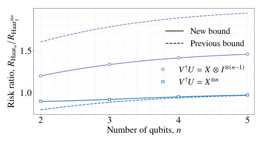
<figcaption class="paper-figure-caption"><b>Fig 1.</b> FIG. 1. Tight product-to-entangled generalization bounds. Given some unitaries U, V , this shows the ratio between RHaarn and RHaar⊗n 1 , computed numerically using 100 000 samples. The theoretical lower bound and upper bound are given by Eq. 54. The blue and purple mark- ers are unitaries U, V that saturate the bound (concretely, V †U = X⊗n and V †U = X ⊗I⊗n−1 respectively).</figcaption>
</figure>
</div>
<p><strong>Summary.</strong> This work establishes theoretical bounds for out-of-distribution learning in quantum dynamics, quantifying generalization using 'bias' and 'expressivity' derived from input state moments. The authors show that the inherent structure of unitary evolution allows for better generalization than general quantum channels. This provides fundamental limits on what can be learned about an unknown quantum process from limited training data.</p>
<p><strong>Why it may be interesting.</strong> It provides rigorous, information-theoretic bounds on generalization in quantum machine learning, which is crucial for designing robust quantum algorithms and understanding the limits of quantum state tomography.</p>
<details>
<summary>Detailed structure</summary>
<p><strong>Main problem.</strong> The paper develops a general framework to quantify how well knowledge of a quantum unitary's action on one set of input states (training distribution) can predict its action on a different set of states (testing distribution), especially when the distributions differ (out-of-distribution learning).</p>
<p><strong>Main result.</strong> The generalization capability is controlled by two quantities, 'bias' and 'expressivity,' and the analysis reveals that unitarity enables robust out-of-distribution generalization, unlike general quantum channels.</p>
<p><strong>Method.</strong> The methodology involves analyzing the expected risk using moment matrices derived from the first and second moments of the input state ensemble, leading to explicit bounds relating training and testing risks.</p>
<p><strong>Model / system.</strong> The study focuses on unknown unitary dynamics ($E(
ho) = U
ho U^\dagger$) acting on quantum states, comparing performance when trained on pure-state ensembles versus testing on different ensembles.</p>
<p><strong>Key observables.</strong> Generalization Error ($    ext{gen}$), Bias ($
u$), Expressivity ($\eta$), and the expected risk $R_P$.</p>
<p><strong>Important parameters / regimes.</strong> The structure of the input ensemble (e.g., random real vs. random complex states) and the dimensionality of the system ($n$).</p>
<p><strong>Assumptions / limitations.</strong> The initial analysis is specialized for pure-state inputs, although extensions to mixed states are discussed; the core comparison is between unitary dynamics and general quantum channels.</p>
<p><strong>Paper structure.</strong> The paper builds from defining the general risk framework using moment matrices to deriving specific bounds for unitary learning, contrasting these robust bounds with the failure of generalization for general quantum channels.</p>
</details>
<details>
<summary>Abstract</summary>
<p>How much can the action of an unknown unitary dynamics on one family of states reveal about its action elsewhere? We develop a general framework for out-of-distribution quantum dynamics learning based on the first and second moments of the input distribution. These define a notion of the bias and expressivity of an ensemble, which together control generalization between arbitrary pure-state training and testing distributions. Our framework shows that only studying the action of a unitary on random real states can learn its action on random complex states, that tensor products of unbiased pure-state ensembles preserve expressivity, and that single-qubit risks are independent of bias. It also recovers earlier locally scrambling results as loose special cases and yields tight product-to-Haar bounds. We conclude with a series of no-go results and limited generalization bounds for learning certain channels, which further serve to underscore the distinctive role of unitarity in enabling out-of-distribution generalization.</p>
</details>
<p><sub><a href="#top">↑ back to top</a></sub></p>
</details>
<h2 id="secondary-cond-mat-archives">Secondary cond-mat archives</h2>
<p><em>Papers from cond-mat.mtrl-sci, mes-hall, other, soft, supr-con. These archives are de-prioritized — they appear at the end regardless of relevance score.</em></p>
<h3 id="relevant-in-secondary-archives-15">Relevant in secondary archives (15)</h3>

<p><a id="paper-2610.02316"></a></p>
<h3 id="a-polynomial-scaling-pde-solver-with-entanglement-basis-tensor-networks"><a href="http://arxiv.org/abs/2610.02316v1">A Polynomial-Scaling PDE Solver with Entanglement-Basis Tensor Networks</a></h3>
<p><strong>Authors:</strong> Abhijatmedhi Chotrattanapituk, Michael J. Landry, Chu-Liang Fu, Mingda Li<br>
<strong>Type:</strong> theory · <strong>Category:</strong> numerical methods · <strong>PDF:</strong> <a href="https://arxiv.org/pdf/2610.02316v1">https://arxiv.org/pdf/2610.02316v1</a><br>
<strong>Analysis basis:</strong> full PDF text, analyzed in chunks
<strong>Topic relevance:</strong> 🔥 <code>methods for driven-dissipative</code> <strong>4/5</strong> · <code>analog quantum simulation</code> <strong>3/5</strong></p>
<div class="figure-strip-hint">↔ Scroll figures horizontally</div>
<div class="paper-figures-scroll">
<figure class="paper-figure-card">
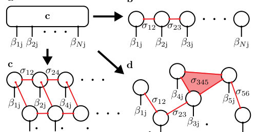
<figcaption class="paper-figure-caption"><b>Fig 1.</b> FIG. 2. TN with locality ansatzes of coefficient tensor under different geometric restriction. Here, σ’s indicate tensor in- dices responsible for each local correlation. (a) No locality assumption: same coefficient tensor as in Fig. 1. (b) Matrix product state (MPS): elements align in one-dimensional chain with correlation only between neighbors. (c) Projected en- tangled pair state (PEPS):elements align in two-dimensional grid with correlation between adjacent nodes along the grid lines. (d) Higher-order TN assumption where shaded regions represent index hyper-contraction. (Adapted from [24])</figcaption>
</figure>
<figure class="paper-figure-card">
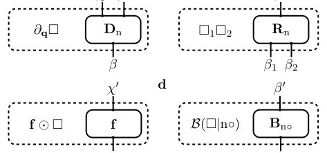
<figcaption class="paper-figure-caption"><b>Fig 2.</b> FIG. 3. TN representation of building block operations: (a) spatial derivative, (b) multiplication, (c) constant factor, and (d) projection of element n to boundary with ◦. Here, β’s are basis and χ’s are non-basis indices. (a and b are adapted from [24])</figcaption>
</figure>
<figure class="paper-figure-card">

<figcaption class="paper-figure-caption"><b>Fig 3.</b> FIG. 4. Summation of TNs with the same structure. (a) Diagram representing summation of two TNs with the same structure which can be replace with a single TN with the same structure with each node be the tensor block direct sum of each original node at the same position in the structure, i.e., Ci = Ai ⊞σ Bi. (b) Simple example of a where each node represent a vector. (c) Slightly more complicated example of a where each node represent a matrix and there are two bonding indices completely contract matrices to scalar, i.e., Ci = Ai ⊞στ Bi.</figcaption>
</figure>
<figure class="paper-figure-card">
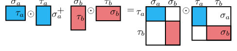
<figcaption class="paper-figure-caption"><b>Fig 4.</b> Figure 4b also demonstrates this for the case when all nodes are vectors. It might seems like using space di- rect sum works here as well, but block version is needed when the bonding has more than one index such as in the case of Fig. 4c where all nodes are matrices that got completely contracted to a scalar. Note that, this anal- ysis also applies when the bond under consideration is connecting two indices of the same tensor.</figcaption>
</figure>
<figure class="paper-figure-card">

<figcaption class="paper-figure-caption"><b>Fig 5.</b> FIG. 6. TN representation of summation building block. (a) Summation of two TNs that has a common part C and the different parts A and B. (b) Building block representation of a. As shown in Eq. (37), the common part can be factor out reducing the task to be the summation of the different parts. Here, F represents filter contracting to A and B. The block direct sum augmentation is implicitly assumed for cleanliness. (c) Specialization for the cases where A and B contract to the same indices of C where the filter is assumed in the branching and merging of contracting edges. (d) Specialization for the cases where A and B contract to the different indices of C.</figcaption>
</figure>
</div>

<p><strong>Summary.</strong> This paper introduces a novel Tensor Network Finite Element (TN-FE) method to solve PDEs with polynomial scaling. It reformulates the PDE residual minimization into a tensor network structure, allowing the use of efficient algorithms like DMRG sweeps. This makes solving large, complex PDEs tractable by exploiting the assumed locality of correlations in the underlying physics.</p>
<p><strong>Why it may be interesting.</strong> This work provides a powerful, scalable numerical tool for simulating complex quantum or condensed matter dynamics described by PDEs, directly bridging quantum many-body simulation techniques (TNs) with continuum physics (PDEs).</p>
<details>
<summary>Detailed structure</summary>
<p><strong>Main problem.</strong> The paper aims to develop a computationally efficient solver for Partial Differential Equations (PDEs) that overcomes the exponential scaling inherent in traditional methods.</p>
<p><strong>Main result.</strong> They achieve polynomial scaling in the number of finite elements by representing the PDE residual minimization problem within a Tensor Network (TN) framework.</p>
<p><strong>Method.</strong> The core method combines the Finite Element Method (FEM) with Tensor Networks (TNs), mapping the PDE residual into a TN structure and using DMRG sweeps for efficient, element-by-element optimization.</p>
<p><strong>Model / system.</strong> The framework is general, applicable to analytic operator equations (OEs) and demonstrated on a 1D diffusion equation. It handles general PDEs by reducing them to OEs.</p>
<p><strong>Key observables.</strong> The weighted residual norm J(c), the solution u(x, t), and the convergence of the solution with respect to basis order and element count.</p>
<p><strong>Important parameters / regimes.</strong> The computational cost scales polynomially with the number of elements, controlled by the bond dimension (S) and correlation order.</p>
<p><strong>Assumptions / limitations.</strong> The primary assumption is that the underlying physics admits a compact Tensor Network representation, implying a locality of correlation.</p>
<p><strong>Figures summary.</strong> Figures illustrate the TN representation of the residual term, the choice of TN ansatzes (MPS, PEPS), and the convergence of the solver for the diffusion equation compared to standard methods.</p>
<p><strong>Paper structure.</strong> The paper builds from the general mathematical formulation of PDEs as OEs, introduces the TN-FE framework for residual minimization, details the implementation of building block operators (derivatives, multiplication), and finally demonstrates convergence using a time-dependent diffusion equation example.</p>
</details>
<details>
<summary>Abstract</summary>
<p>We develop a finite element method (FEM) for partial differential equation (PDE) solver based on the entanglement-basis representation introduced in our companion work. By lifting non-linear finite-element equations into an augmented coefficient space, the governing PDE together with boundary, initial, and inter-element constraints can be expressed through a unified quadratic residual minimization. Although this augmented space grows exponentially with the number of elements, its tensor-product structure allows it to be represented efficiently using tensor networks. Using the matrix product state (MPS) as a concrete example, we show that density matrix renormalization group (DMRG) sweeps enable element-by-element optimization without explicitly constructing the full augmented space. For bounded bond dimension, the resulting computational cost scales polynomially with the number of finite elements. We extend the framework to time-dependent problems through implicit temporal discretization and demonstrate convergence under both mesh and polynomial refinement using diffusion equations.</p>
</details>
<p><sub><a href="#top">↑ back to top</a></sub></p>

<p><a id="paper-2610.02422"></a></p>
<h3 id="highly-tunable-photon-magnon-coupling-governed-by-collective-mode-profiles-in-reconfigurable-dielectric-resonator-arrays"><a href="http://arxiv.org/abs/2610.02422v1">Highly Tunable Photon-Magnon Coupling Governed by Collective-Mode Profiles in Reconfigurable Dielectric-Resonator Arrays</a></h3>
<p><strong>Authors:</strong> Shihao Zhou, Edward Kwao, Junming Wu, Abhijit Shinde, Yin Lyu, Rene Lopez, Wencan Jin, Yi Li, Binbin Yang, Wei Zhang<br>
<strong>Type:</strong> both · <strong>Category:</strong> other · <strong>PDF:</strong> <a href="https://arxiv.org/pdf/2610.02422v1">https://arxiv.org/pdf/2610.02422v1</a><br>
<strong>Analysis basis:</strong> full PDF text, analyzed in chunks
<strong>Topic relevance:</strong> <code>analog quantum simulation</code> <strong>3/5</strong> · <code>interference shaping light</code> <strong>3/5</strong> · <code>Tavis-Cummings &amp; cavity-many-emitter</code> <strong>2/5</strong> · <code>methods for driven-dissipative</code> <strong>2/5</strong> · <code>correlated / nonlocal dissipation</code> <strong>1/5</strong> · <code>driven-dissipative phase transition</code> <strong>1/5</strong> · <code>quantum optics experiment</code> <strong>1/5</strong></p>
<div class="figure-strip-hint">↔ Scroll figures horizontally</div>
<div class="paper-figures-scroll">
<figure class="paper-figure-card">

<figcaption class="paper-figure-caption"><b>Fig 1.</b> FIG. 1. (a) Schematic of the zigzag DR array mounted along a copper microstrip line. A YIG sphere is placed directly above the selected DR. The DC bias field, Hext, is in the plane of the board. The inset defines the resonator indices D1 to D5: the filled resonators form the 3-DR array, whereas the dashed positions indicate the additional resonators reserved for constructing the 4-DR and 5-DR arrays. (b) S12 spec- tra of multiple DRs separated by 6 mm. The absence of a resolvable normal-mode splitting indicates that any coupling- induced frequency separation at this distance remains smaller than the experimental linewidth.</figcaption>
</figure>
<figure class="paper-figure-card">

<figcaption class="paper-figure-caption"><b>Fig 2.</b> FIG. 2. (a) Measured zero-field transmission S12 of the 3- DR array (red) and the corresponding HFSS spectrum (blue, shifted vertically by +8.5 dB for clarity). The vertical dashed line marks the single-DR resonance, while solid and hollow symbols identify the simulated and experimental resonances, respectively, with matching shapes indicating the proposed mode correspondence. The insets show the HFSS microwave magnetic-field profiles at 5.934, 6.403, 6.595, and 6.812 GHz, evaluated at a common RF phase. The laboratory coordinate system is defined in Fig. 1(a). (b) Differential transmission magnitude ∆S12 as a function of external magnetic field and frequency, measured with the YIG sphere...</figcaption>
</figure>
<figure class="paper-figure-card">

<figcaption class="paper-figure-caption"><b>Fig 3.</b> FIG. 3. Local-node selection rule in the 3-DR array. The experimental differential transmission-magnitude maps ∆S12 at (a) 6.109, (c) 6.290, and (e) 6.513 GHz are compared with the corresponding HFSS microwave magnetic-field profiles at (b) 6.403, (d) 6.595, and (f) 6.812 GHz, respectively. Within each experimental panel, the top, middle, and bottom rows correspond to the YIG sphere positioned directly above D1, D2, and D3, as indicated by the accompanying schematics. The spectra extracted at the magnetic fields marked by the vertical dashed lines are displayed beside the corresponding maps. The green dashed box in (c) marks the site–mode combination for which no resolvable avoided crossing...</figcaption>
</figure>
<figure class="paper-figure-card">

<figcaption class="paper-figure-caption"><b>Fig 4.</b> FIG. 4. Measured zero-field transmission S12 of the com- pact 5-DR array (red), compared with the corresponding HFSS driven-response spectrum (blue). The measurement is performed without the YIG sphere and without an applied bias field, and the simulated spectrum is shifted vertically by +8.5 dB for clarity. Solid and hollow symbols identify the simulated and experimental collective photon resonances, respectively, with matching shapes indicating the proposed mode correspondence.</figcaption>
</figure>
<figure class="paper-figure-card">

<figcaption class="paper-figure-caption"><b>Fig 5.</b> FIG. 5. Local-node selection rule in the 5-DR array. The upper group shows modes with internal nodes, comparing the experimental ∆S12 maps at (a) 6.172, (c) 6.305, and (e) 6.400 GHz with the corresponding HFSS microwave magnetic-field profiles at (b) 6.450, (d) 6.595, and (f) 6.715 GHz, respectively. The lower group shows modes without internal nodes, comparing the experimental maps at (g) 6.095 and (i) 6.559 GHz with the corresponding HFSS profiles at (h) 6.355 and (j) 6.872 GHz, respectively. Within each experimental panel, the five rows from top to bottom correspond to the YIG sphere positioned directly above D1 through D5. The solid horizontal lines mark the collective photon-mode...</figcaption>
</figure>
</div>

<p><strong>Summary.</strong> This research demonstrates site-selective control over magnon-photon coupling in reconfigurable microwave circuits by exploiting the spatial profile of the collective photon mode. By physically reconfiguring dielectric resonators, the coupling strength can be tuned based on where the local magnetic field of the photon mode is non-zero. This establishes a powerful, programmable route for building hybrid quantum microwave devices.</p>
<p><strong>Why it may be interesting.</strong> This work provides a concrete, experimentally verifiable platform for engineering quantum light-matter interactions, moving beyond simple spectral matching to utilize the spatial wave function structure for control.</p>
<details>
<summary>Detailed structure</summary>
<p><strong>Main problem.</strong> The paper addresses controlling the interaction between localized magnetic excitations (magnons) and microwave photons by exploiting the spatial structure of the photon mode.</p>
<p><strong>Main result.</strong> The magnon-photon coupling is governed by the local amplitude of the collective photon mode at the magnon position, leading to a site-selective coupling rule that can be demonstrated and predicted in reconfigurable arrays.</p>
<p><strong>Method.</strong> The study combines full-wave electromagnetic simulations (HFSS) with coupled-mode modeling to analyze transmission spectra as a function of external magnetic field and resonator geometry.</p>
<p><strong>Model / system.</strong> The system uses modular arrays of dielectric resonators on a PCB to create tunable collective photon modes. The interaction is modeled by coupling the YIG magnon mode to these photon modes, whose collective behavior is described by nearest-neighbor Hamiltonian approximations.</p>
<p><strong>Key observables.</strong> Site-selective magnon-photon coupling (observed as avoided crossings in transmission spectra), collective mode frequencies, and local microwave magnetic field profiles.</p>
<p><strong>Important parameters / regimes.</strong> External magnetic field ($H_{ext}$), resonator separation ($d$), and the local amplitude of the collective photon mode.</p>
<p><strong>Assumptions / limitations.</strong> Initially, the ideal model assumes uniform nearest-neighbor coupling, but the authors note that real-world geometric asymmetry breaks this symmetry, requiring a more complex vector field treatment.</p>
<p><strong>Figures summary.</strong> Figures illustrate the schematic setup, $S_{12}$ spectra for various resonator configurations (2-DR, 3-DR, 4-DR), and position-resolved coupling patterns demonstrating site-dependent hybridization.</p>
<p><strong>Paper structure.</strong> The paper progresses from demonstrating site-selectivity in small arrays (3-DR) to establishing the general principle of local-node selection, and finally discussing the limitations of idealized models by analyzing larger, asymmetric arrays (4-DR).</p>
</details>
<details>
<summary>Abstract</summary>
<p>The spatial structure of a microwave photon mode provides a degree of freedom for controlling its interaction with a localized magnetic excitation. We demonstrate site-selective magnon-photon coupling in modular arrays of discrete dielectric resonators mounted on a common microstrip line. The resonators can be added, removed, or rearranged on the same completed PCB, enabling post-fabrication geometrical reconfiguration of the collective photon modes and their nodal structure. A YIG sphere is positioned successively above individual resonators, while an in-plane magnetic field tunes its Kittel mode through the collective photon resonances. In a three-resonator array, modes with finite local microwave magnetic fields hybridize with the magnon at every measured site, whereas a mode containing a central field node exhibits no resolvable splitting when the sphere is positioned at that node. Full-wave simulations and a coupled-mode model show that the interaction is governed by the local amplitude of the collective photon mode rather than by spectral resonance alone. Extending this local-node selection rule to a five-resonator array successfully predicts the measured position-dependent coupling patterns. These results establish post-fabrication control of spatial magnon-photon hybridization and provide a route toward reconfigurable magnonic interfaces in future hybrid quantum microwave architectures.</p>
</details>
<p><sub><a href="#top">↑ back to top</a></sub></p>

<p><a id="paper-2610.03461"></a></p>
<h3 id="complete-magnetic-hierarchy-in-bichromatically-driven-unconventional-magnets"><a href="http://arxiv.org/abs/2610.03461v1">Complete Magnetic Hierarchy in Bichromatically Driven Unconventional Magnets</a></h3>
<p><strong>Authors:</strong> Pei-Hao Fu, Sayed Ali Akbar Ghorash<br>
<strong>Type:</strong> theory · <strong>Category:</strong> other · <strong>PDF:</strong> <a href="https://arxiv.org/pdf/2610.03461v1">https://arxiv.org/pdf/2610.03461v1</a><br>
<strong>Analysis basis:</strong> full PDF text, analyzed in chunks
<strong>Topic relevance:</strong> <code>analog quantum simulation</code> <strong>3/5</strong> · <code>Keldysh / 2PI / non-Gaussian methods</code> <strong>2/5</strong> · <code>driven-dissipative phase transition</code> <strong>2/5</strong> · <code>methods for driven-dissipative</code> <strong>2/5</strong> · <code>interference shaping light</code> <strong>1/5</strong> · <code>non-equilibrium universality</code> <strong>1/5</strong> · <code>quantum measurements</code> <strong>1/5</strong></p>
<div class="figure-strip-hint">↔ Scroll figures horizontally</div>
<div class="paper-figures-scroll">
<figure class="paper-figure-card">

<figcaption class="paper-figure-caption"><b>Fig 1.</b> FIG. 1. (a) Schematic of a d-wave magnet illuminated by a two-frequency driving field composed of circularly (⟲) and linearly (↕) polarized light, with the corresponding vector- potential trajectory in the Ax(t)-Ay(t) plane of individual and combined lights. (b) Schematic band dispersions of static state, Es, instantaneous band dispersions at t±, E(t±), and ¯E after time averaging. (c) Summary of results: Light- induced hierarchy of spin-splitting components generated by the bichromatic drive from parent p-, d-, f-, g-, and i-wave magnets.</figcaption>
</figure>
<figure class="paper-figure-card">

<figcaption class="paper-figure-caption"><b>Fig 2.</b> FIG. 2. (a) Dispersion of Eq. (6) for tJ = 0, ky = 0, and β = 0. (b) Equal-energy contours at E/t0 = 1.5 for different β with ϕ = 0. (c) Two-frequency-light-dressed dispersion of the dx2−y2 magnet (θJ = 0) for β = π/4 (dashed lines) and β = 0 (solid lines). The spin-up (spin-down) states are denoted in red (blue). (d) Corresponding equal-energy contours at E/t0 = 1.5. (e,f) Same as (c,d), but for the dxy magnet (θJ = π/4) and ϕ = π/2. Parameters: t0 = 1, ω = 1, η = 1, µ = 0, aeA1/ℏ= aeA2/ℏ= 1, and tJ = 0 for (a,b) and tJ = 0.5 for (c-f).</figcaption>
</figure>
</div>

<p><strong>Summary.</strong> This work develops a general theory showing how bichromatic light driving can systematically engineer unconventional magnetism in materials. By analyzing the effective Hamiltonian, the authors demonstrate that the drive completes the magnetic spin-splitting hierarchy up to a specific order $q$. This mechanism is powerful because it allows for the dynamic generation of mixed-parity magnetic components, which is crucial for advanced spintronic applications.</p>
<p><strong>Why it may be interesting.</strong> The use of Floquet engineering to dynamically control and engineer specific symmetries (like parity) in magnetic order parameters is highly relevant to open quantum systems and quantum optics applications.</p>
<details>
<summary>Detailed structure</summary>
<p><strong>Main problem.</strong> The paper establishes a general framework for engineering unconventional magnetism by using bichromatic light driving to induce a complete magnetic hierarchy of spin-splitting components.</p>
<p><strong>Main result.</strong> The bichromatic drive can complete the magnetic hierarchy up to order $q$ by combining the leading continuum theory results with contributions from higher-gradient lattice terms, enabling magnetic-parity conversion.</p>
<p><strong>Method.</strong> The analysis employs Floquet engineering theory to derive the effective time-averaged Hamiltonian, comparing continuum approximations with full lattice treatments.</p>
<p><strong>Model / system.</strong> The system models unconventional magnets (altermagnets) characterized by specific magnetic parities, driven by a bichromatic field composed of circularly and linearly polarized light.</p>
<p><strong>Key observables.</strong> Magnetic spin-splitting components classified by angular harmonics ($s, p, d, f, g, \dots$), and the resulting momentum-asymmetric electronic structure.</p>
<p><strong>Important parameters / regimes.</strong> The frequency ratio of the bichromatic drive (especially generic even commensurate ratios) and the lattice structure details.</p>
<p><strong>Assumptions / limitations.</strong> The analysis relies on the assumption of a generic even commensurate frequency ratio for hierarchy completion, and approximations are made when comparing continuum vs. lattice results.</p>
<p><strong>Figures summary.</strong> Figures illustrate the schematic of $d$-wave magnets under driving, showing band dispersions and confirming the completion of the $s$-$p$-$d$ hierarchy.</p>
<p><strong>Paper structure.</strong> The paper progresses by first establishing the general framework for hierarchy completion using $d$-wave magnets, then detailing the mechanism of parity conversion, and finally extending the analysis to higher-order magnets ($f$-wave, $g$-wave) to show the general $s-p-d-f-g$ hierarchy.</p>
</details>
<details>
<summary>Abstract</summary>
<p>We establish a general framework for engineering unconventional magnetism using bichromatic driving. We identify a sharp hierarchy: for a bichromatic drive with a generic even commensurate frequency ratio, the leading continuum $q$-wave magnet generates components only up to order $q-2$, whereas lattice higher-gradient terms supply the missing $q-1$ and $q$ parities and complete the hierarchy through order $q$. We explicitly illustrate this new revised hierarchy on a $d$-wave altermagnet irradiated by a circularly-linearly polarized light, and show that the asymmetry of the driving field is transferred to the light-dressed electronic structure, producing momentum-asymmetric dispersions beyond the static and single-frequency limits. We further show that this band asymmetry is absent in the leading continuum expansion and originates from higher-gradient lattice terms that are converted by the bichromatic drive into odd-in-momentum contributions. Extending the analysis to higher-order unconventional magnets, we further obtain complete magnetic hierarchies for all $q$-parity unconventional magnets. Our results establish bichromatic Floquet driving as a general route for generating mixed-parity magnetic hierarchies and dynamically engineering unconventional magnetism.</p>
</details>
<p><sub><a href="#top">↑ back to top</a></sub></p>

<p><a id="paper-2610.02514"></a></p>
<h3 id="quantum-materials-qed-with-van-der-waals-crystals"><a href="http://arxiv.org/abs/2610.02514v1">Quantum materials QED with van der Waals crystals</a></h3>
<p><strong>Authors:</strong> Suheng Xu, Brian Vermilyea, Ran Jing, Lukas Wehmeier, Jihoon Park, Rafael A. Mayer, Xinzhong Chen, Samuel L. Moore, Fuyang Tay, Boyi Zhou, Wenjun Zheng, Dihao Sun, Birui Yang, Cory R. Dean, Daniel Cazorla, Xu Du, Milan Delor, Andrew J. Millis, Angel Rubio, Michael M. Fogler, Mengkun Liu, D. N. Basov<br>
<strong>Type:</strong> theory · <strong>Category:</strong> other · <strong>PDF:</strong> <a href="https://arxiv.org/pdf/2610.02514v1">https://arxiv.org/pdf/2610.02514v1</a><br>
<strong>Analysis basis:</strong> full PDF text, analyzed in chunks
<strong>Topic relevance:</strong> <code>Tavis-Cummings &amp; cavity-many-emitter</code> <strong>3/5</strong> · <code>analog quantum simulation</code> <strong>3/5</strong> · <code>driven-dissipative phase transition</code> <strong>2/5</strong> · <code>Keldysh / 2PI / non-Gaussian methods</code> <strong>1/5</strong> · <code>correlated / nonlocal dissipation</code> <strong>1/5</strong> · <code>interference shaping light</code> <strong>1/5</strong> · <code>methods for driven-dissipative</code> <strong>1/5</strong></p>
<div class="figure-strip-hint">↔ Scroll figures horizontally</div>
<div class="paper-figures-scroll">
<figure class="paper-figure-card">

<figcaption class="paper-figure-caption"><b>Fig 1.</b> Figure 1. Quantum-material QED in a graphene/hBN multilayer cavity. (a) Schematics of a graphene/hBN multilayer cavity composed of four unit cells under a perpendicular magnetic field. The black and blue atomic layers represent graphene and hBN, supporting inter-Landau-level transitions (ILTs) and hyperbolic phonon resonances, respectively. The hyperbolic phonon resonances in hBN couple strongly to graphene ILTs through long-range Coulomb interactions across adjacent layers. The dashed rectangle in the right inset marks one graphene/hBN repeat. (b) Mode hybridization and avoided crossing in a 70- nm-thick MC with four unit cells. The red and blue dashed curves show the dispersions of the...</figcaption>
</figure>
<figure class="paper-figure-card">

<figcaption class="paper-figure-caption"><b>Fig 2.</b> Figure 2. Quantum electrodynamic modeling for mode coupling between a Landau level resonance and hBN phonon cavity modes. (a) Theoretically calculated cavity mode dispersions in the type-II branches in a 70-nm-thick hBN slab (without graphene). The index l denotes the order of the cavity mode. (b) Normalized in-plane electric field of hBN cavity modes in the vertical direction as a function of height at 1500 𝑐𝑚/,. (c) QED-calculated dispersion relationship in a (𝑑= 71 𝑛𝑚, 𝑁= 1) MC. The blue curve corresponds to the zeroth-order cavity mode in hBN. The red curve corresponds to the Landau level resonance. The magenta and the purple curves correspond to the upper and lower branches of the...</figcaption>
</figure>
<figure class="paper-figure-card">

<figcaption class="paper-figure-caption"><b>Fig 3.</b> Figure 3. Layer-density-dependent mode hybridization and coupling in graphene/hBN MCs. (a–c)</figcaption>
</figure>
<figure class="paper-figure-card">

<figcaption class="paper-figure-caption"><b>Fig 4.</b> Figure 4. Depth-engineered selective coupling of cavity modes in a two-unit-cell graphene/hBN heterostructure. (a–c) Bottom panels: Calculated mode-splitting magnitude for cavity modes with indices 𝑙= 0, 1, 2 respectively, in an MC (d = 70 nm, N = 2). The mode-splitting magnitudes are functions of 𝑧, and 𝑧*, which denote positions of the two graphene layers relative to hBN. Blue, red, and green crosses mark three representative layer arrangements illustrated in (d). Top panels: Mode-splitting magnitude versus the position of one graphene layer (𝑧,) with 𝑧* fixed; the selected 𝑧* is marked by black arrows in the corresponding bottom panels. (d) Illustration of the arrangements of two graphene...</figcaption>
</figure>
</div>

<p><strong>Summary.</strong> This paper proposes using van der Waals multilayer cavities of graphene and hBN to engineer strong light-matter interactions for quantum electrodynamics. By magnetically tuning graphene's electronic transitions into resonance with hBN phonons, the authors predict broadband, mode-selective coupling. This establishes the multilayer structure as a highly tunable and scalable platform for realizing ultrastrong coupling regimes.</p>
<p><strong>Why it may be interesting.</strong> This work directly addresses cavity QED in solid-state systems, providing a detailed theoretical roadmap for engineering strong light-matter coupling using tunable quantum materials, which is highly relevant to AMO physics.</p>
<details>
<summary>Detailed structure</summary>
<p><strong>Main problem.</strong> The central goal is to develop a scalable platform for tunable multimode Quantum Electrodynamics (QED) by engineering light-matter interactions using subwavelength confinement.</p>
<p><strong>Main result.</strong> The study demonstrates that van der Waals multilayer cavities composed of graphene and hBN can achieve broadband, mode-selective strong coupling, potentially reaching the ultrastrong coupling regime.</p>
<p><strong>Method.</strong> The authors developed a quantum material QED framework involving the quantization of confined electromagnetic fields and deriving the system Hamiltonian.</p>
<p><strong>Model / system.</strong> The physical system is a van der Waals multilayer cavity made of stacked graphene and hexagonal boron nitride (hBN). The model incorporates magnetically tunable Inter-Landau-Level Transitions (ILTs) in graphene coupled to hyperbolic phonon resonances in hBN.</p>
<p><strong>Key observables.</strong> Mode splitting ($\Delta$), coupling strength, and mode hybridization between ILTs and phonons.</p>
<p><strong>Important parameters / regimes.</strong> Magnetic field strength (tuning ILTs), cavity geometry (layer placement, number of layers $N$), and the ratio $\Delta/\omega_0$ (for ultrastrong coupling).</p>
<p><strong>Assumptions / limitations.</strong> The analysis assumes a spatially local continuum model for hBN and neglects direct electrostatic coupling between different graphene layers.</p>
<p><strong>Figures summary.</strong> Figures illustrate the schematic of the multilayer cavity, showing mode hybridization via avoided crossings in the dispersion relation, and comparing uncoupled versus coupled mode dispersions.</p>
<p><strong>Paper structure.</strong> The paper builds the QED Hamiltonian by incorporating graphene ILTs and hBN phonon modes, analyzes the resulting mode hybridization, and establishes the multilayer structure as a tunable platform for strong coupling.</p>
</details>
<details>
<summary>Abstract</summary>
<p>A central goal of the emerging field of materials QED is to harness subwavelength electromagnetic confinement in engineered cavities to tailor light-matter interactions. Here, we demonstrate that van der Waals multilayer cavities composed of stacked graphene and hexagonal boron nitride (hBN) provide unprecedented control over hybridization between their electromagnetic resonances. By magnetically tuning graphene inter-Landau-level transitions (ILTs) into resonance with hBN phonons, we witness broadband, mode-selective strong coupling in the mid-infrared. Our quantum-material QED framework shows that cavity geometry and layer placement jointly control both coupling strength and modal selectivity. For experimentally realistic cavity parameters, the predicted mode splitting exceeds the width of the hBN Reststrahlen band, providing a direct route to the ultrastrong coupling regime. Together, these results establish van der Waals multilayer cavities as a scalable platform for tunable multimode QED and broaden the design space for reconfigurable quantum materials.</p>
</details>
<p><sub><a href="#top">↑ back to top</a></sub></p>

<p><a id="paper-2610.02818"></a></p>
<h3 id="extracting-the-anyon-charge-from-shot-noise-in-complex-fractional-quantum-hall-edges"><a href="http://arxiv.org/abs/2610.02818v1">Extracting the anyon charge from shot noise in complex fractional quantum Hall edges</a></h3>
<p><strong>Authors:</strong> Jinhong Park, Christian Sp{\ra}nsl{ä}tt<br>
<strong>Type:</strong> theory · <strong>Category:</strong> strongly correlated electrons · <strong>PDF:</strong> <a href="https://arxiv.org/pdf/2610.02818v1">https://arxiv.org/pdf/2610.02818v1</a><br>
<strong>Analysis basis:</strong> full PDF text, analyzed in chunks
<strong>Topic relevance:</strong> <code>Full counting statistics</code> <strong>3/5</strong> · <code>Keldysh / 2PI / non-Gaussian methods</code> <strong>2/5</strong> · <code>correlated / nonlocal dissipation</code> <strong>2/5</strong> · <code>methods for driven-dissipative</code> <strong>2/5</strong> · <code>quantum measurements</code> <strong>2/5</strong></p>
<div class="figure-strip-hint">↔ Scroll figures horizontally</div>
<div class="paper-figures-scroll">
<figure class="paper-figure-card">

<figcaption class="paper-figure-caption"><b>Fig 1.</b> Figure 1. (a) Model of an equilibrating ν = 2/3 line junction of length L. The red and blue lines represent the downstream ν = 1 integer channel and the upstream ν = 1/3 fractional channel, respectively. The line junction is divided into small cells, where the two counter-propagating channels exchange charge and energy through weak equilibration links. The highlighted yellow box illustrates the ith cell and the local voltages and temperatures on its two sides, with the corre- sponding tunneling charge and energy currents Iτ,i and Jτ,i. The left and right boundary contacts are characterized by (VL, TL) and (VR, TR), respectively. (b) Four-terminal QPC geometry. Each of the four arms is...</figcaption>
</figure>
<figure class="paper-figure-card">

<figcaption class="paper-figure-caption"><b>Fig 2.</b> Figure 2. Voltage and temperature profiles of an equilibrat- ing ν = 2/3 line junction for VL = V0, VR = 0, and T0 = 0. (a) Local voltage profiles V1(x) and V3(x), normalized by V0. The voltage difference between the two channels is strongly suppressed over most of the line junction and remains appre- ciable only near x = L, where the upstream fractional channel is injected. (b) Corresponding temperature profiles, normal- ized as (πkBT1,3(x)/eV0)2. The Joule heating generated near x = L is transported toward the opposite end, x = 0, through thermal equilibration between the counter-propagating chan- nels, resulting in approximately linear profiles of T 2 1,3 away from the heating region....</figcaption>
</figure>
<figure class="paper-figure-card">

<figcaption class="paper-figure-caption"><b>Fig 3.</b> Figure 3. Voltage and temperature profiles along the upper and lower edges of the four-terminal QPC geometry. We use L/ℓch = 10, ℓth/ℓch = 3, T0 = 0, and T = 0.1. (a) Volt- age profiles along the upper edge, from the UL contact at x = −L to the UR contact at x = L. (b) Corresponding volt- age profiles along the lower edge, from the DL contact to the DR contact. (c) Temperature profiles along the upper edge. (d) Corresponding temperature profiles along the lower edge. The red and blue curves represent the integer and fractional channels, respectively. The voltages are normalized by V0, while the temperatures are shown as (πkBT/eV0)2. The ver- tical dashed line at x = 0 indicates the position...</figcaption>
</figure>
<figure class="paper-figure-card">

<figcaption class="paper-figure-caption"><b>Fig 4.</b> Figure 4. Schematic illustrations of how noise generated at different locations contributes to the drain-current correla- tions. The black solid lines represent the edges, with the arrows indicating the dominating, downstream propagation directions. The yellow, gray, and green spots represent the outer-arm, inner-arm, and QPC noise-generating spots, re- spectively, while the colored dashed arrows indicate the prop- agation of the corresponding current fluctuations. (a) For the auto-correlation, noise generated in an outer arm can propa- gate directly to the corresponding drain. (b) For the cross- correlation, the same outer-arm fluctuation contributes to the opposite drain only after...</figcaption>
</figure>
<figure class="paper-figure-card">

<figcaption class="paper-figure-caption"><b>Fig 5.</b> Figure 5. Bias dependence of the excess current noises and the corresponding Fano factors, calculated from the full expressions without expanding in T . The calculations are performed in the strong charge-equilibration regime, ℓch ≪ L. (a) Excess auto-correlation ∆Sauto and negative cross- correlation −∆Scross, normalized by the equilibrium Johnson– Nyquist noise 2kBT0G(L), as functions of the dimensionless bias e∗V0/(kBT0), where G(L) ≡2G0/3 is the two termi- nal conductance of the fully equilibrated ν = 2/3 edge. (b) Fano factors Fauto, Fcross, and Fclean as functions of the same dimensionless bias as in (a). The horizontal dashed line in- dicates the quasiparticle charge e∗/e = 1/3. This...</figcaption>
</figure>
</div>

<p><strong>Summary.</strong> This paper presents a systematic theoretical framework to interpret shot noise in complex Fractional Quantum Hall edges. It addresses the major hurdle of separating intrinsic quasiparticle tunneling noise from noise generated by thermal equilibration and heating. By combining auto- and cross-correlations in a specific way, the authors successfully isolate the true quasiparticle charge, providing a powerful diagnostic tool for topological physics.</p>
<p><strong>Why it may be interesting.</strong> This work provides a sophisticated theoretical tool for interpreting transport measurements in topological materials, directly addressing the complex interplay between charge transport and thermalization in strongly correlated edge states.</p>
<details>
<summary>Detailed structure</summary>
<p><strong>Main problem.</strong> The primary challenge is accurately extracting the intrinsic quasiparticle charge from shot noise measurements in complex Fractional Quantum Hall (FQH) edges, as these measurements are contaminated by noise generated through intermode equilibration and Joule heating.</p>
<p><strong>Main result.</strong> The authors derive a specific combination of auto- and cross-correlations that strongly suppresses the heating contribution, allowing for the clean recovery of the tunneling quasiparticle charge.</p>
<p><strong>Method.</strong> The work develops a general theoretical framework by modeling the edge junction using continuum equations derived from local charge and energy conservation laws, analyzing noise correlations in a four-terminal QPC geometry.</p>
<p><strong>Model / system.</strong> The system is an FQH edge, specifically modeled using a junction connecting two counter-propagating channels ($
u=1$ and $
u=1/3$) within a four-terminal Quantum Point Contact (QPC) geometry.</p>
<p><strong>Key observables.</strong> Auto- and cross-correlations in the drain contacts ($  ext{S}<em DL_DL="DL,DL">{UR,UR}$, $  ext{S}</em>}$, $  ext{S<em ext_auto="ext{auto">{UR,DL}$), and the resulting Fano factors ($F</em>$, $F_{	ext{cross}}$, $F_{	ext{clean}}$).}</p>
<p><strong>Important parameters / regimes.</strong> Charge equilibration length scale ($\ell_{ch}$) and thermal equilibration length scale ($\ell_{th}$); the analysis focuses on the regime where $\ell_{ch} \ll L$.</p>
<p><strong>Assumptions / limitations.</strong> The analysis assumes that at low frequencies, charge accumulation within a cell can be neglected, allowing for local conservation of average current and fluctuations.</p>
<p><strong>Figures summary.</strong> Figures illustrate the discrete model of the edge junction and the overall four-terminal QPC geometry. Table I compares the scaling of heating corrections for different noise combinations, and Figure 5 shows the bias dependence of the calculated Fano factors.</p>
<p><strong>Paper structure.</strong> The paper first establishes the physical model of the edge junction and the four-terminal setup. It then derives continuum equations for voltage and temperature profiles. The core of the work involves analyzing the noise correlations, leading to the construction of a specialized Fano factor ($F_{	ext{clean}}$) that systematically removes the heating contamination.</p>
</details>
<details>
<summary>Abstract</summary>
<p>Shot-noise measurements with a quantum point contact provide a direct probe of the quasiparticle charge in Laughlin fractional quantum Hall (FQH) states. However, the interpretation of such measurements becomes more subtle for multichannel edges, where the point-contact tunneling noise coexists with noise generated by intermode equilibration and heating. We develop a general framework that incorporates both these contributions and apply it to the paradigmatic $ν=2/3$ FQH edge. We derive expressions for the drain auto- and cross-correlations in a four-terminal QPC geometry and show that equilibration-induced heating affects the auto- and cross-correlations in parametrically different way than the intrinsic partition noise. This distinction permits us to propose a specific combination of the two correlations which strongly suppresses the heating contribution and fully recovers the tunneling quasiparticle charge. Our results thereby provide a systematic framework for interpreting shot-noise measurements in complex FQH edges and can be further extended to more general counterpropagating edge structures.</p>
</details>
<p><sub><a href="#top">↑ back to top</a></sub></p>

<p><a id="paper-2610.02978"></a></p>
<h3 id="sideband-fingerprint-of-the-leggett-mode-in-terahertz-two-dimensional-coherent-spectroscopy-of-multiband-superconductors"><a href="http://arxiv.org/abs/2610.02978v1">Sideband fingerprint of the Leggett mode in terahertz two-dimensional coherent spectroscopy of multiband superconductors</a></h3>
<p><strong>Authors:</strong> Silvia Neri, Ryo Shimano, Dirk Manske, Naoto Tsuji<br>
<strong>Type:</strong> theory · <strong>Category:</strong> other · <strong>PDF:</strong> <a href="https://arxiv.org/pdf/2610.02978v1">https://arxiv.org/pdf/2610.02978v1</a><br>
<strong>Analysis basis:</strong> full PDF text, analyzed in chunks
<strong>Topic relevance:</strong> <code>Keldysh / 2PI / non-Gaussian methods</code> <strong>3/5</strong> · <code>methods for driven-dissipative</code> <strong>2/5</strong> · <code>analog quantum simulation</code> <strong>1/5</strong> · <code>correlated / nonlocal dissipation</code> <strong>1/5</strong> · <code>driven-dissipative phase transition</code> <strong>1/5</strong> · <code>interference shaping light</code> <strong>1/5</strong> · <code>non-equilibrium universality</code> <strong>1/5</strong> · <code>quantum measurements</code> <strong>1/5</strong></p>
<div class="figure-strip-hint">↔ Scroll figures horizontally</div>
<div class="paper-figures-scroll">
<figure class="paper-figure-card">

<figcaption class="paper-figure-caption"><b>Fig 1.</b> FIG. 1. Schematic comparison of (a) conventional 2D spec- troscopy originally developed in the field of chemical and molecular physics and (b) 2DCS for quantum materials. (a) Representative 2D spectrum of a mixture of two compounds. Diagonal peaks correspond to conventional 1D spectral fea- tures, while off-diagonal peaks reveal coupling between differ- ent transitions; peaks B and C belong to the same species and are coupled, as illustrated by the level scheme. (b) Represen- tative 2DCS spectrum generated by two time-delayed pulses, A(t) and A(t + ∆t), centered at ±Ω. Third-order frequency mixing produces four fundamental-harmonic spots and two third-harmonic spots. For a clean...</figcaption>
</figure>
<figure class="paper-figure-card">

<figcaption class="paper-figure-caption"><b>Fig 2.</b> FIG. 2. Temperature dependence of the superconducting gaps 2∆1 and 2∆2 and the Leggett-mode frequency ωL for the model in Eq. (1) with the interband coupling parameter (a) ν = 0.02 (in-gap Leggett mode) and (b) ν = 0.32 (between- gap Leggett mode). The Leggett-mode frequency extracted from the pseudospin dynamics (green lines) is overlaid on the spectral function (color map) obtained from Eq. (12). The other parameters are ∆1 = 3 meV, ∆2 = 7 meV, ϵF,1 = 1.6 eV, ϵF,2 = 0.7 eV, m1 = 0.85me, m2 = 1.38me, ϵD = 50 meV, s1 = 1, and s2 = −1, chosen to be representative of MgB2.</figcaption>
</figure>
<figure class="paper-figure-card">

<figcaption class="paper-figure-caption"><b>Fig 3.</b> FIG. 3. Third-order nonlinear current j(3) of a two-band su- perconductor calculated within the pseudospin model. (a,b) Two-dimensional spectra in the (ωt, ω∆t) frequency plane ob- tained from the model Hamiltonian in Eq. (1) for ν = 0.02, corresponding to an in-gap Leggett mode, at (a) T = 4 K and (b) T = 39 K. In (a), characteristic sidebands associated with the Leggett-mode resonance appear at ωt = ±ωL ∓Ω, as highlighted by the orange boxes. These sidebands are strongly suppressed upon approaching the critical tempera- ture Tc = 44 K, as shown in (b). (c) Schematic illustration of the nonlinear process responsible for the sidebands. Non- linear excitation of a collective mode at ωL...</figcaption>
</figure>
<figure class="paper-figure-card">

<figcaption class="paper-figure-caption"><b>Fig 4.</b> FIG. 4. Schematic illustration of the spectral features in jA2 1A2(ωt, ω∆t) for narrow-band pulses. Extended spectral weight appears along the horizontal lines ω∆t = ±Ωand the diagonal lines ωt −ω∆t = 0, ±2Ω, as indicated by the dashed lines. Their intersections produce the characteristic peaks of the 2D spectrum. The elongated shapes schematically illus- trate the finite spectral width arising from the principal-value components of the pulse spectrum.</figcaption>
</figure>
<figure class="paper-figure-card">

<figcaption class="paper-figure-caption"><b>Fig 5.</b> FIG. 5. Diagrammatic representation of the collective-mode resonance in the third-order nonlinear response. The inter- nal wavy line represents a collective-mode excitation with frequency ±ν. In the upper panel, the three incoming fre- quencies are ω, ωt −ω∆t −ω, and ω∆t, leading to the reso- nance condition ωt −ω∆t = ±ν, which is independent of the integration frequency ω. The lower panel illustrates the cor- responding process when one of the incoming frequencies is fixed to ±Ωby the δ-function component of the narrow-band pulse spectrum.</figcaption>
</figure>
</div>

<p><strong>Summary.</strong> This work theoretically establishes that terahertz two-dimensional coherent spectroscopy (2DCS) can directly fingerprint the elusive Leggett mode in multiband superconductors. The key insight is that the finite duration of the THz pulses enables the nonlinear excitation of this mode, which appears as distinct sidebands in the 2D spectrum. This method offers a powerful, non-invasive diagnostic tool for studying superconducting pairing interactions.</p>
<p><strong>Why it may be interesting.</strong> The use of nonlinear spectroscopy (2DCS) to probe a collective, non-linear excitation like the Leggett mode is highly relevant to open quantum systems and quantum optics, as it requires understanding how coherent driving fields couple to intrinsic many-body dynamics.</p>
<details>
<summary>Detailed structure</summary>
<p><strong>Main problem.</strong> The primary challenge is the direct experimental detection of collective superconducting modes, specifically the Leggett mode, which are difficult to observe in multiband superconductors.</p>
<p><strong>Main result.</strong> The authors theoretically demonstrate that terahertz two-dimensional coherent spectroscopy (2DCS) provides a unique and robust fingerprint of the Leggett mode through characteristic sideband emission in the nonlinear 2D spectrum.</p>
<p><strong>Method.</strong> The theoretical framework involves calculating the nonlinear dynamics of the superconducting order parameters using the Anderson pseudospin language and analyzing the resulting third-order nonlinear current to predict the 2D spectrum.</p>
<p><strong>Model / system.</strong> The system is a multiband superconductor, modeled using a minimal two-band BCS framework, whose dynamics are mapped onto pseudospin equations. The Leggett mode represents the coherent oscillation of the relative phase between the two superconducting condensates.</p>
<p><strong>Key observables.</strong> The Leggett mode frequency ($\omega_L$), which manifests as sidebands in the 2D spectrum at $\omega_t = \omega_L \pm \Omega$.</p>
<p><strong>Important parameters / regimes.</strong> The interband coupling parameter ($
u$), the central frequency of the incident pulses ($\Omega$), and the temperature ($T$).</p>
<p><strong>Assumptions / limitations.</strong> The analysis relies on the Random Phase Approximation (RPA) and assumes the finite duration of the THz pulses provides the necessary nonlinear frequency mixing to excite the mode.</p>
<p><strong>Figures summary.</strong> Figures illustrate the comparison between conventional 2D spectroscopy and the predicted 2DCS spectrum, showing the characteristic side peaks associated with the Leggett mode.</p>
<p><strong>Paper structure.</strong> The paper progresses from establishing the physical difficulty of measuring the mode to deriving the theoretical signature using 2DCS, demonstrating its robustness against dissipation, and finally showing unambiguous identification by sweeping the central frequency $\Omega$.</p>
</details>
<details>
<summary>Abstract</summary>
<p>Collective modes of the superconducting condensate encode fundamental information on the pairing interaction, yet their direct detection remains experimentally challenging. In multiband superconductors, the Leggett mode, i.e., a coherent oscillation of the relative phase between two condensates, is Raman-active and couples to light only nonlinearly in ordinary situations. Here we show theoretically that terahertz two-dimensional coherent spectroscopy (2DCS) provides a direct fingerprint of the Leggett mode (with frequency $ω_L$) through sideband emission at the detection frequency $ω_t = ω_L\pmΩ$ ($Ω$ is the central frequency of the incident pulses) in the nonlinear 2D spectrum. The key insight is that the finite duration of the THz pulses is the physical mechanism that makes the mode accessible: the broad spectral content of a finite pulse provides the nonlinear frequency combinations needed to resonantly excite the mode at ωL without any prior knowledge of its value or tuning of external parameters. We demonstrate robustness of this signature against temperature and quasiparticle relaxation, and show that sweeping $Ω$ allows unambiguous identification of the Leggett mode.</p>
</details>
<p><sub><a href="#top">↑ back to top</a></sub></p>
<hr>
<p>
<a href="index.html">← Index</a>
 · <a href="papers_07.html">← Previous</a> · <a href="papers_09.html">Next →</a>
</p>
<hr>

</body>
</html>
